Les découvreurs du temps
Quand les amateurs deviennent les premiers acteurs de la recherche paléontologique
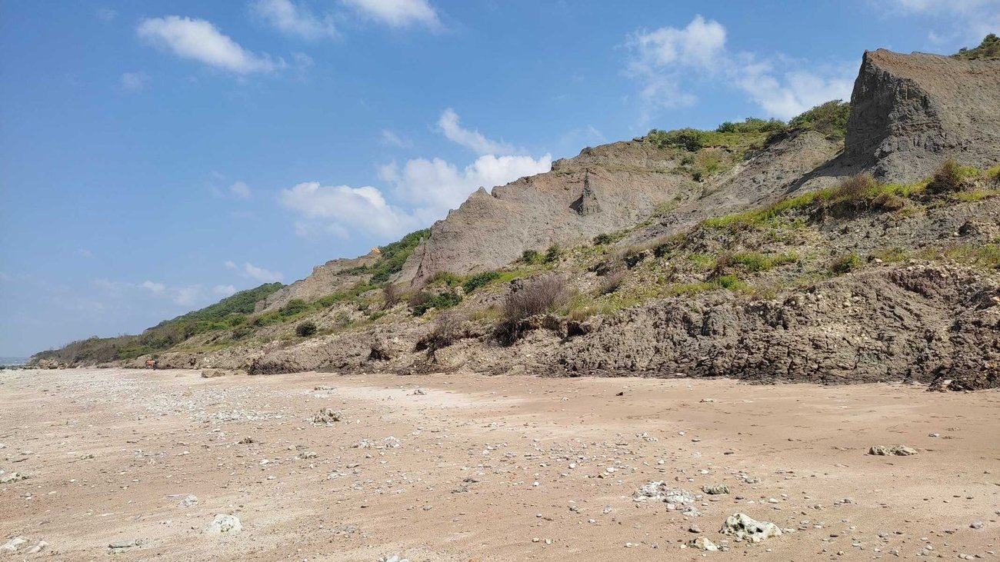
Novembre 2026 · Lecture : environ 45 minutes
Livre blanc
Sauver les fossiles que la mer détruit
Pour une collecte de sauvegarde encadrée sur l’estran du Calvados. La synthèse adressée aux parlementaires, aux ministères et à la presse.
Télécharger le PDFDocument complet
Les découvreurs du temps
Le rôle des amateurs dans la recherche paléontologique et l’examen, un par un, des arguments avancés pour justifier l’interdiction.
Télécharger le PDF1. Introduction — Une plage, une marée, un fossile
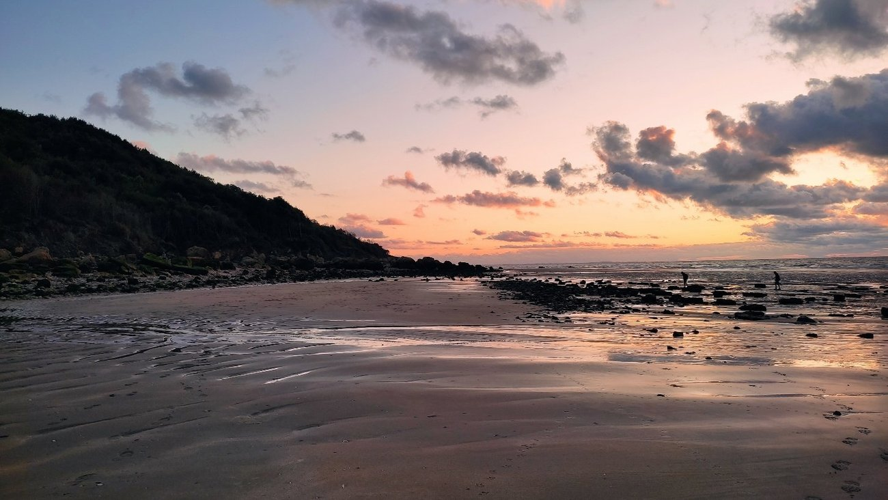
Après une nuit de tempête, la mer se retire sur les falaises des Vaches Noires. Les flots puissants ont attaqué encore un peu plus la marne des falaises et arraché de la matière à l’estran. Des blocs se sont détachés. Et de cette marne grise, grignotée par l’érosion, des pierres et des fossiles sont révélés, voire extraits, et refont surface après être restés enfouis pendant des millions d’années, oubliés de tous.
C’est alors que, pendant quelques heures seulement, un fossile vieux de près de 160 millions d’années apparaît à la surface de l’estran. Deux marées plus tard, il aura été brisé par les galets ou emporté par la mer. Personne ne saura jamais qu’il avait existé. Personne ne saura peut-être jamais qu’un être de cette espèce avait été présent dans cette région à cette époque.
Mais un autre scénario est possible.
Un promeneur s’arrête. Il reconnaît qu’il ne s’agit pas d’un simple caillou. Il le ramasse, le montre à un musée ou pose la question sur un réseau social. Quelques mois plus tard, ce fossile est étudié, publié, parfois exposé. Il rejoint alors le patrimoine scientifique et culturel de notre pays.
Entre ces deux destins, il n’y a parfois que quelques heures... et la présence providentielle d’un regard attentif.
Cette page poursuit deux objectifs. Le premier est de montrer, exemples et chiffres à l’appui, ce que la paléontologie doit aux amateurs. Le second est d’examiner un par un les arguments avancés pour justifier l’interdiction du ramassage des fossiles sur l’estran dans la réserve naturelle nationale des falaises jurassiques du Calvados, créée par le décret du 2 septembre 2026 [1].
2. Que veut-on réellement protéger ?
La première question mérite d’être posée simplement : que devient un fossile lorsqu’il quitte la falaise ?
Aux Vaches Noires, les falaises sont constituées notamment de marnes et de roches relativement tendres, soumises à une érosion active. Les tempêtes, les pluies, les mouvements de terrain et l’action incessante de la mer détachent progressivement des fragments de falaise et libèrent les fossiles qu’ils contiennent.
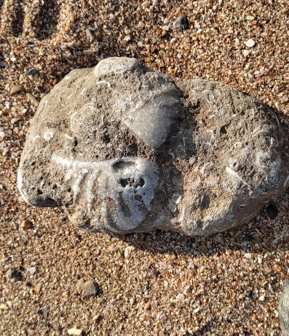
Tant qu’un fossile demeure dans la falaise, il est protégé par la roche qui l’entoure. Mais lorsqu’il arrive sur l’estran, sa situation change radicalement.
Il n’est plus protégé. Les marées le déplacent. Les vagues le roulent. Les galets le frappent. À chaque cycle de marée, les chocs et l’abrasion poursuivent leur œuvre.
Un fossile libéré de sa gangue et livré à l’estran est voué à disparaître. Il est brisé par les galets, réduit par les chocs et l’abrasion, puis dispersé par la mer. Une fois détruit, il ne pourra plus être étudié, conservé dans une collection, exposé ou contribuer à la connaissance scientifique.
Le même phénomène naturel qui permet de découvrir le patrimoine paléontologique est donc aussi celui qui le détruit.
Préserver la falaise, sauver le fossile
Préserver les falaises est une chose. Préserver les fossiles qu’elles libèrent en est une autre.
L’accès aux falaises est déjà interdit. Les fossiles présents sur l’estran devraient pouvoir être ramassés, car ils ont déjà été libérés de la falaise par l’érosion et sont alors voués à la destruction.
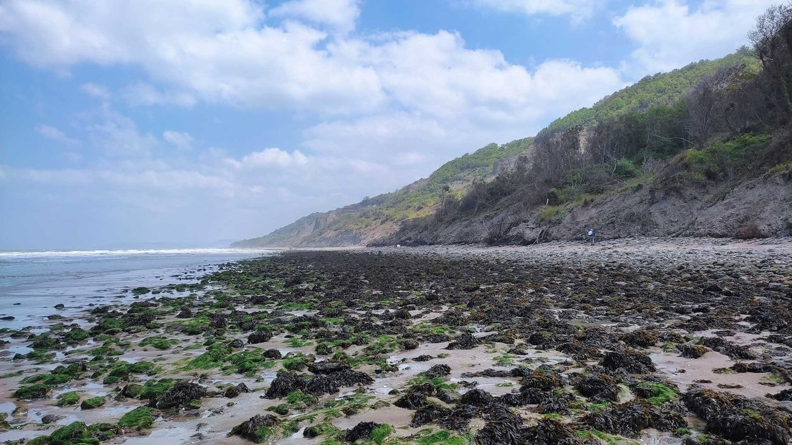
Si personne ne le récupère, le fossile sera détruit. Ce n’est pas une éventualité : c’est son destin naturel.
La véritable question est donc de savoir si, au moment où il devient accessible, nous voulons le laisser disparaître ou permettre à quelqu’un de le sauver. Parler de sauvegarder le patrimoine, c’est ramasser ce fossile avant qu’il ne soit détruit ou emporté par la mer.
Un patrimoine que les scientifiques ne peuvent pas sauver eux-mêmes
Les scientifiques ne parcourent pas quotidiennement les kilomètres d’estran à chaque marée pour récupérer les fossiles qui viennent d’être libérés.
Les personnes qui découvrent ces spécimens sont très majoritairement des promeneurs, des passionnés, des familles, des amateurs. Ce sont eux qui sont présents au moment où le fossile doit être récupéré.
L’amateur peut donc être celui qui permet au patrimoine de ne pas disparaître.
3. Ces inconnus qui découvrent le passé
Il n’est pas nécessaire d’être paléontologue pour faire une découverte paléontologique.
Sur une plage, la plupart des personnes qui cherchent des fossiles ne sont pas des scientifiques. Ce sont des curieux, des débutants ou des collectionneurs confirmés.
Un fossile peut apparaître à la faveur d’une tempête, entre deux marées, au milieu de milliers de galets. Il ne porte aucune indication permettant de savoir qu’il est important. Il faut d’abord que quelqu’un le remarque.
Tout commence par une question
Un enfant ramasse un objet étrange. Un promeneur remarque une forme inhabituelle. Quelqu’un rentre chez lui avec un « caillou » dont il ne connaît pas l’origine et cherche une réponse.
Cette question, apparemment anodine, peut être le début d’une véritable démarche scientifique.
Le chemin parcouru entre le promeneur qui ramasse un objet sur la plage et le chercheur qui l’étudie peut être long. Mais sans le premier regard, il n’y a pas de deuxième étape.
Une porte d’entrée vers la culture scientifique
Le ramassage des fossiles constitue pour beaucoup une porte d’entrée vers la géologie, la paléontologie, les sciences naturelles.
Un enfant qui découvre une ammonite peut vouloir savoir quel animal en est à l’origine, puis découvrir les couches géologiques, l’évolution et les extinctions. C’est une activité gratuite, accessible à tous, enrichissante et valorisante : une initiation facile et ludique au monde scientifique, par la pratique.
Ce levier compte d’autant plus que la France accuse un retard persistant en sciences. Dans l’enquête PISA 2025, publiée en septembre 2026 et dont la culture scientifique était justement le domaine majeur, les élèves français obtiennent 483 points en sciences, leur plus bas niveau depuis que ce domaine est mesuré (499 en 2012) ; ils ne restent dans la moyenne de l’OCDE qu’à la faveur d’un recul général des pays membres [2]. L’enquête TIMSS 2023 faisait déjà le même constat dès l’école primaire : 488 points en sciences en CM1, contre 518 en moyenne dans l’Union européenne, et des résultats sous la moyenne européenne en connaissances environnementales [3]. Pourtant, l’envie est là : 71 % des élèves français déclarent aimer travailler sur des sujets scientifiques, contre 55 % en moyenne dans l’OCDE, et l’OCDE elle-même souligne que former davantage de scientifiques suppose de cultiver le plaisir d’apprendre les sciences autant que la performance [4]. Observer, comparer, identifier, se documenter : le ramassage de fossiles fait pratiquer la démarche scientifique sans qu’on la nomme, et nourrit précisément ce plaisir. L’interdire au moment où le pays décroche en sciences est pour le moins paradoxal.
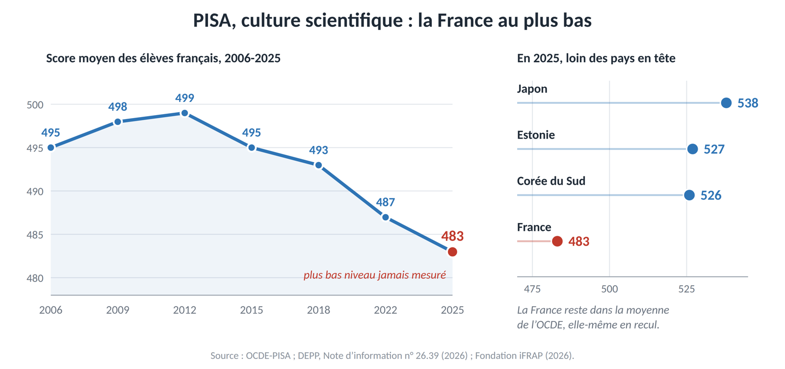
Cette émotion de la première découverte, tous les amateurs l’ont connue, et bien des paléontologues professionnels aussi : chez beaucoup d’entre eux, la vocation est née le jour où ils ont ramassé leur premier fossile. Nombre de paléontologues ont ainsi été initiés très jeunes par un parent, qui les emmenait dans les carrières, et ils ont fait de cette passion leur métier. Il y a encore moins de vingt ans, ces carrières étaient accessibles, et de nombreuses découvertes y ont été faites alors que ces fossiles étaient voués à la destruction. Fermer l’accès aux fossiles, c’est non seulement perdre ces fossiles, mais c’est aussi tarir le vivier des vocations de demain. On objectera qu’il reste possible de regarder sans emporter. Mais la découverte ne s’arrête pas sur la plage : c’est à la maison qu’on nettoie sa trouvaille, qu’on la compare, qu’on cherche son nom, qu’on la montre, et c’est là que naît la curiosité scientifique. Le fossile laissé sur l’estran, lui, disparaîtra à la marée suivante.
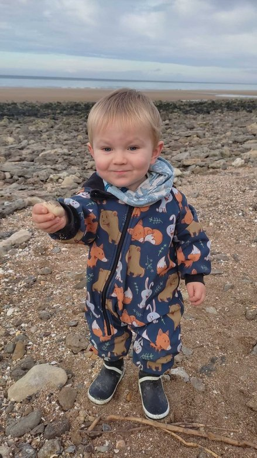
Un promeneur peut devenir passionné, rejoindre un club, apprendre à identifier et documenter ses découvertes.
Les clubs géologiques regroupent d’anciens paléontologues, des médecins, des ingénieurs, des professeurs, des militaires, des chauffeurs routiers, des aides-soignants… Des profils différents qui se sont tous rassemblés autour d’une passion commune : découvrir l’histoire de la vie sur Terre, l’histoire et l’évolution de la planète que nous habitons. Certains membres de clubs vont même jusqu’à reprendre une formation universitaire en géologie. La frontière entre le simple curieux et l’acteur de la connaissance n’est donc pas aussi nette qu’on pourrait le penser.
La grande majorité des trouvailles sont banales. Et alors ?
La très grande majorité des fossiles ramassés par les amateurs ne révolutionnera jamais la paléontologie. Ce n’est pas un problème.
Personne ne sait à l’avance quel fossile est intéressant. Une pièce qui paraît banale peut révéler une particularité que seul un spécialiste saura reconnaître.
Le rôle de l’amateur n’est pas de remplacer le scientifique. Il est de rendre possible la rencontre entre une découverte et celui qui saura l’interpréter.
Du ramasseur au partenaire
À force d’observer, de comparer, de lire, de participer à des sorties et d’échanger avec des spécialistes, certains amateurs deviennent extrêmement compétents.
Ils savent où regarder, reconnaître une pièce inhabituelle, la documenter et surtout quand une découverte mérite d’être signalée.
Amateur ne signifie pas incompétent. Il signifie d’abord passionné.
Les participants à cet échange sont des amateurs. Ils n’en possèdent pas moins de solides connaissances en paléontologie et en stratigraphie, s’appuient sur la littérature scientifique de référence et mettent en œuvre une véritable démarche scientifique : observer, comparer, formuler des hypothèses, les confronter à des indices concrets, les discuter, et savoir reconnaître une incertitude plutôt que de trancher trop vite. On est bien loin de l’image, parfois véhiculée, d’amateurs venus piller les sites pour y ramasser tous les fossiles et les revendre avec profit.
Ces passionnés s’interrogent sur leurs découvertes et les partagent ouvertement, photos à l’appui. Des scientifiques sont présents sur ces forums : l’un d’eux aurait pu reconnaître dans cette ammonite une pièce d’intérêt, justifiant une étude scientifique, et elle aurait alors pu rejoindre une collection publique. Ramassée sur l’estran, elle aurait sinon fini usée, puis détruite par les marées. C’est ainsi que fonctionne, au quotidien, la chaîne qui relie la plage aux musées ; l’interdiction du ramassage la rompt dès son premier maillon.
4. Quand une découverte change de dimension
Il arrive qu’une découverte faite par un amateur dépasse rapidement le cadre de la collection personnelle.
L’histoire d’Amaury en est un exemple particulièrement parlant. Membre d’un club géologique, passionné de paléontologie et habitué à documenter ses découvertes, il a trouvé dans une carrière une pièce dont l’intérêt s’est rapidement révélé particulier.
Comme beaucoup d’amateurs, il ne s’est pas contenté de conserver sa découverte. Il a cherché à l’identifier et l’a présentée à des spécialistes.
Étant donné la rareté de cette pièce, il n’a pas hésité à en faire don au Paléospace de Villers-sur-Mer, où elle est aujourd’hui conservée. Elle fait l’objet d’une étude scientifique en cours, dirigée par Éric Buffetaut, qui doit donner lieu à une publication à laquelle Amaury participera lui-même. Comme il est d’usage en recherche, et compte tenu du caractère exceptionnel de la découverte, aucun détail ne peut être divulgué avant cette publication.
Il ne sera pas simplement cité comme découvreur. Il en sera co-auteur. Il documentera la partie consacrée au contexte de la découverte et réalisera les illustrations scientifiques qui accompagneront l’article.
Amaury est tatoueur de profession et possède un véritable talent pour le dessin. C’est pourtant cette passion pour les fossiles et cette capacité à observer, documenter et représenter ses découvertes qui l’ont conduit à collaborer avec des professionnels de la paléontologie.
Son travail graphique a notamment retenu l’attention du Paléospace, qui envisage de futures collaborations avec lui.
Ses dessins ont d’ailleurs déjà franchi la Manche. Le 24 septembre 2026, le Journal of Vertebrate Paleontology, l’une des principales revues internationales de paléontologie des vertébrés, a publié une étude de paléontologues britanniques consacrée à deux poissons fossiles du Rhétien britannique, Birgeria acuminata et Saurichthys sp. Amaury en a réalisé les illustrations et figure parmi ses huit co-auteurs, aux côtés notamment de Michael J. Benton, paléontologue de l’Université de Bristol [5]. Un point concret et vérifiable : un amateur passionné contribue aujourd’hui à la recherche publiée au niveau international.
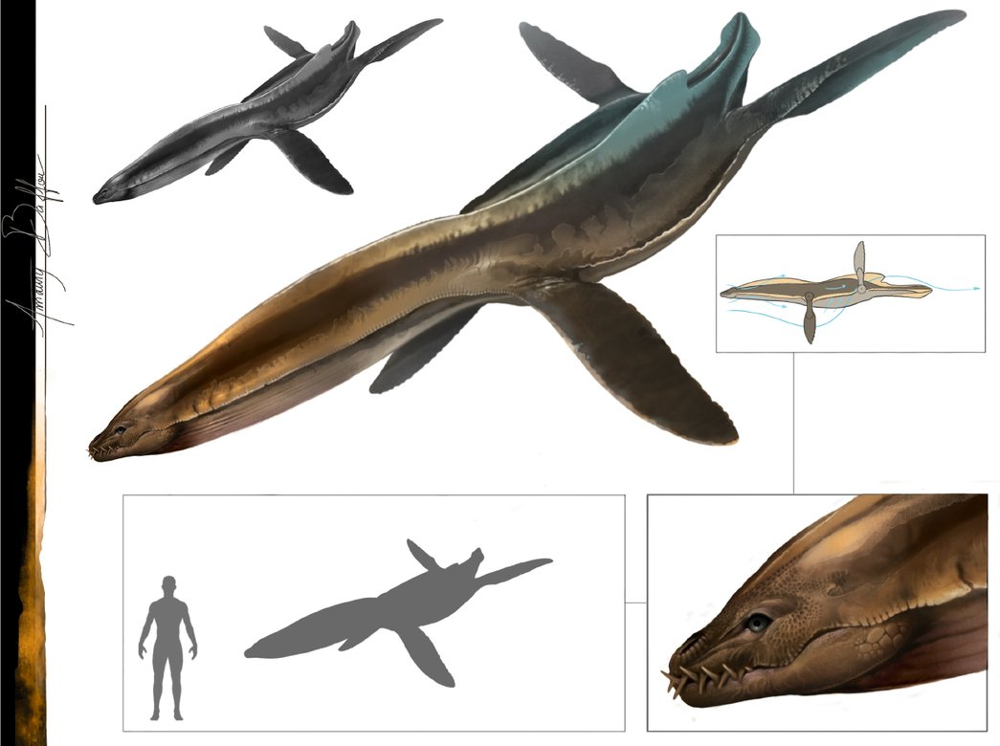
Cette histoire montre à quel point la séparation entre « amateur » et « professionnel » peut devenir artificielle.
Une découverte née d’une passion personnelle peut ainsi devenir une contribution à la recherche scientifique, puis ouvrir la porte à des collaborations, avec un musée comme avec des chercheurs étrangers.
Et tout a commencé par quelqu’un qui, un jour, a pris le temps d’aller prospecter dans une carrière accessible.
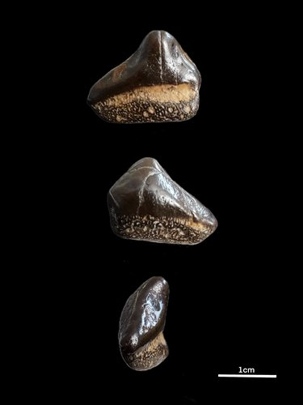
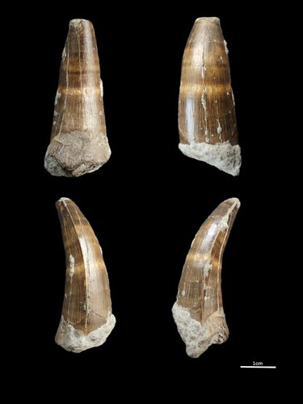
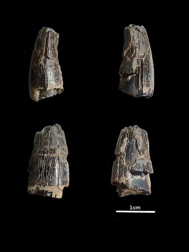
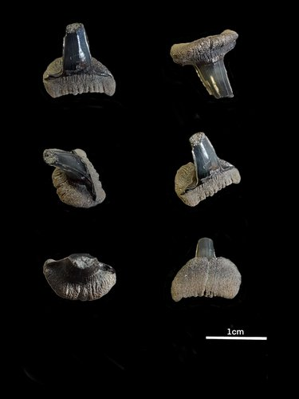
5. Quand les amateurs enrichissent le patrimoine public
Une autre histoire, directement liée aux Vaches Noires, illustre de manière remarquable le rôle que peuvent jouer les amateurs.
Un poisson retrouvé morceau après morceau
Au cours de l’hiver 2023, au fil de plusieurs semaines, la mer a progressivement dégagé différents fragments d’un même poisson fossile. Quatre amateurs, qui se connaissaient et échangeaient notamment grâce aux réseaux sociaux et aux groupes spécialisés, ont chacun découvert un morceau sur l’estran [6].
Chacun de ces fragments aurait pu rester une découverte isolée. Mais les amateurs ont communiqué entre eux. Après la découverte des deux premiers morceaux, comprenant qu’ils pouvaient appartenir au même animal, ils se sont organisés et ont concentré leurs recherches sur le secteur où ils avaient été trouvés. Deux autres fragments ont ainsi été découverts, dont la tête.
Le poisson n’est pas complet, mais ces recherches successives et la coopération entre les amateurs ont permis d’en rassembler une partie importante.
Il s’agit d’un fossile rare et particulièrement intéressant. Plutôt que de conserver chacun leur fragment, les découvreurs, conscients du côté exceptionnel de cette découverte, ont naturellement pris la décision de les réunir et d’en faire don au Paléospace.
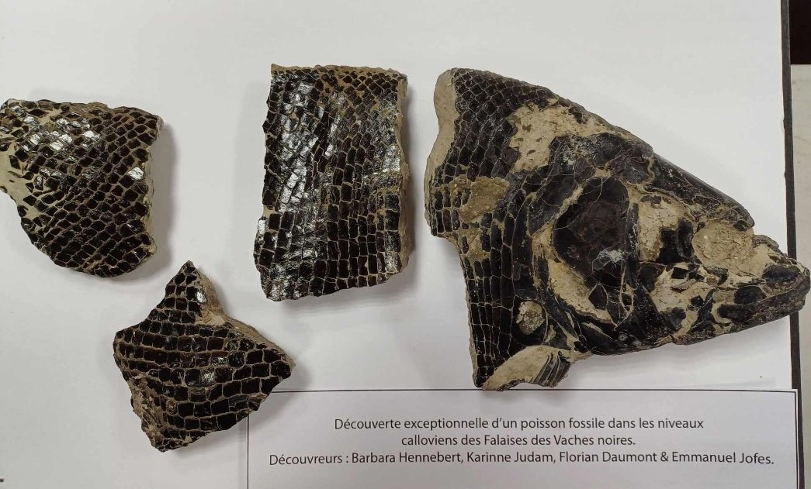
Cet épisode montre que l’estran peut être un lieu de découverte scientifique, que l’amateur peut travailler collectivement et que les réseaux sociaux peuvent devenir des outils de science participative.
Un fossile libéré par la mer a ainsi été remarqué, recherché, rassemblé, préservé puis transmis au patrimoine public.
Sans la présence successive de ces quatre amateurs, sans leurs échanges, leur organisation et sans leur décision de poursuivre les recherches, ce poisson aurait disparu avec les marées, sans qu’aucun scientifique ne soit au courant de son existence. Et des sorties pédagogiques ou de rares prospections scientifiques, issues de conventions tripartites, occasionnelles, n’auraient jamais permis une telle découverte.
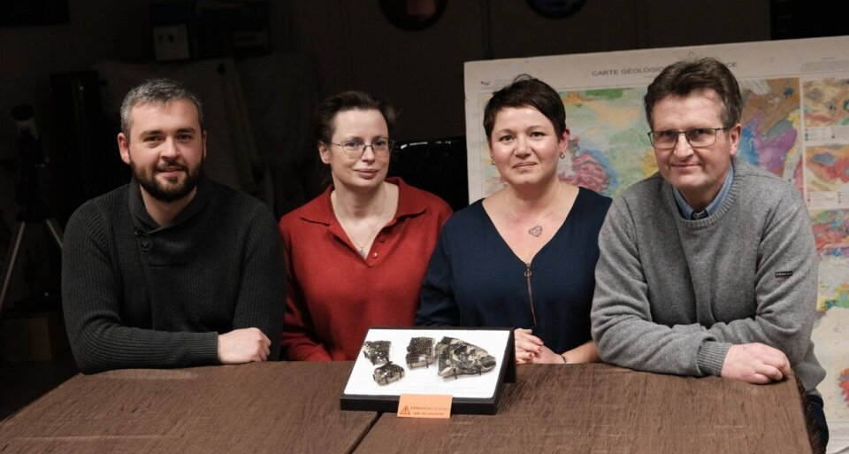
Une histoire exceptionnelle, mais pas un phénomène isolé
Selon Laurent Picot, paléontologue au Paléospace, 26 000 fossiles sont actuellement inventoriés dans les collections du musée et au moins 10 000 autres, issus de dons de collections, restent encore à inventorier [7].
Et 99 % des fossiles du musée proviennent d’amateurs. Tous sont sous le label « Musée de France » [8]. Ce chiffre est vertigineux. Il ne s’agit pas de quelques découvertes exceptionnelles venues enrichir ponctuellement les collections : les amateurs constituent la source de la quasi-totalité des fossiles conservés par le musée. Éric Buffetaut, paléontologue et chercheur au CNRS, le rappelle également : 99 % des collections du musée proviennent de particuliers qui ont ramassé des fossiles [9].
La plupart des fossiles découverts par les amateurs sont de petite taille. Ils ne sont ni spectaculaires ni destinés à devenir les pièces emblématiques d’une exposition. Mais accumulés au fil des années, ils constituent la matière même d’une collection scientifique : des spécimens que l’on peut comparer, étudier, prêter, exposer et transmettre.
Laurent Picot le résume d’une formule : les amateurs « sont nos yeux » [10].
Ce que montrent les publications scientifiques
Le constat du Paléospace est confirmé par la littérature scientifique. En mai 2026, une étude publiée dans PLOS One par des chercheurs de l’Université de Rennes, du Muséum d’histoire naturelle de Genève et du Paléospace a dressé le premier panorama des poissons osseux des Vaches Noires. Elle repose sur des restes collectés, pour l’essentiel, par des paléontologues amateurs au fil des années, puis conservés dans des collections publiques [11]. La directrice du Paléospace l’a résumé simplement : sans l’aide des collectionneurs de fossiles, cette étude n’aurait jamais vu le jour [12].
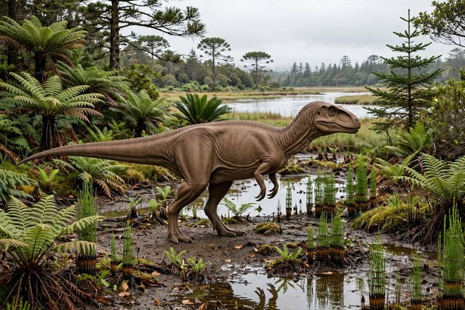
Ce constat vaut bien au-delà des Vaches Noires. Une synthèse publiée en février 2026 sur les dinosaures du Crétacé de Normandie constate que presque tous les fossiles connus, y compris les découvertes les plus récentes, ont été trouvés par des amateurs [13]. La plus récente l’illustre parfaitement. Nicolas Cottard, professeur de sciences physiques dans un lycée de Dieppe, est un passionné de paléontologie qui travaille en collaboration avec des professionnels ; il est coauteur d’un ouvrage sur le Cénomanien du littoral normand [14]. En 2021, puis en 2023, il a recueilli au pied des falaises de Saint-Jouin-Bruneval, près du Havre, deux blocs issus d’un même éboulement. Ils renfermaient les os d’un dinosaure carnivore d’environ six mètres, vieux de quelque 100 millions d’années et jusque-là inconnu. Éric Buffetaut, directeur de recherche émérite au CNRS, l’a identifié [15], puis l’a décrit en 2024 avec ses collègues sous le nom de Caletodraco cottardi, le « dragon des Calètes » de Cottard. Selon leur étude, les os avaient déjà été abîmés par leur chute de la falaise et par leur exposition en surface avant d’être remarqués et recueillis ; laissés sur place, ils auraient fini détruits par la mer. Le découvreur en a fait don au muséum d’histoire naturelle du Havre [16]. À l’étranger, une étude consacrée aux vertébrés marins de la côte Pacifique des États-Unis montre que des fossiles collectés par des amateurs figurent dans 40 % des publications de la zone étudiée, et dans près de la moitié de celles de la dernière décennie [17].
Autrement dit, l’interdiction du ramassage sur l’estran menace directement une source essentielle du patrimoine paléontologique conservé dans les collections publiques. Quelques sorties occasionnelles autorisées ne remplaceront jamais la présence quasi permanente des amateurs, qui permet de repérer et de sauver des pièces de valeur scientifique. Même avec cette présence, de nombreux fossiles se perdent au milieu des galets. La réduire, c’est condamner la très grande majorité d’entre eux, et parmi eux des pièces d’importance.
Ce qui disparaîtrait avec les amateurs ne serait pas seulement une pratique. Ce serait une partie du patrimoine qui serait perdue à jamais.
6. Une histoire qui dépasse les Vaches Noires
La question posée par la collecte des fossiles ne se limite pas au cas des Vaches Noires. Elle touche à la manière dont nous voulons observer et préserver un patrimoine qui est en permanence soumis à l’érosion naturelle et, dans d’autres contextes, aux transformations humaines.
Les Vaches Noires sont l’exemple central de cette page parce qu’elles illustrent de manière spectaculaire le rôle joué par les amateurs et qu’elles sont un symbole pour la paléontologie normande. Mais elles ne constituent qu’un des nombreux sites où cette présence contribue à la connaissance du patrimoine géologique.
Le littoral du Calvados offre une remarquable diversité. Les falaises et les plages ne montrent pas partout les mêmes couches ni les mêmes périodes de l’histoire de la Terre. À Luc-sur-Mer et Lion-sur-Mer, les terrains du Bathonien supérieur livrent une faune différente. Du côté de Port-en-Bessin, d’autres niveaux géologiques du Bathonien inférieur apportent encore d’autres témoignages. Plus à l’est, entre Trouville et Villerville, les Roches Noires correspondent à des terrains plus jeunes de l’Oxfordien.
Pour l’amateur qui parcourt régulièrement ces côtes, cette diversité transforme chaque secteur en terrain d’observation particulier. Il apprend progressivement à reconnaître les roches, les fossiles et les contextes géologiques. Il devient un observateur familier d’un territoire qui évolue sous ses yeux au gré des marées, des tempêtes et de l’érosion.
Le rôle des amateurs ne s’arrête pas au bord de la mer. Dans les carrières l’exploitation déplace et détruit des volumes considérables de matériaux. Un fossile peut apparaître puis disparaître sans qu’un scientifique puisse être présent à chaque étape. Lorsqu’un amateur est légitimement présent sur le terrain et sait regarder, il est le premier témoin possible de cette découverte.
L’histoire d’Amaury, dont la découverte principale provient d’une carrière, en est une illustration. Les scientifiques ne peuvent surveiller ni chaque tempête, ni chaque marée, ni chaque front de taille. Les amateurs, eux, sont présents sur ces terrains et constituent un véritable réseau d’observateurs du patrimoine géologique.
La plupart des fossiles rencontrés sont ordinaires. Mais leur intérêt ne se lit pas toujours au premier regard. Une dent isolée, un fragment d’os ou un morceau de coquille peut devenir important lorsqu’il est comparé à d’autres spécimens ou replacé dans son contexte géologique.
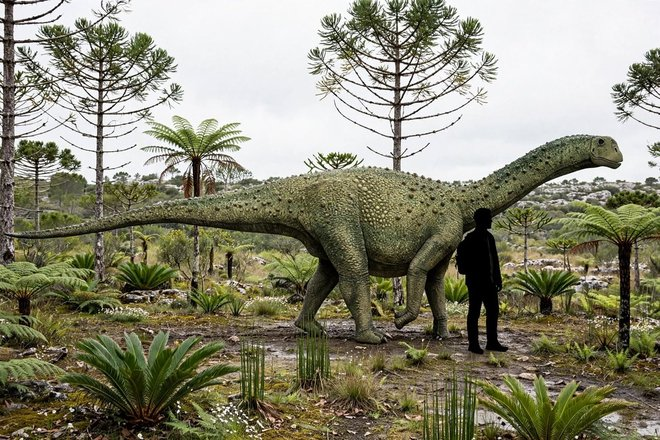
Ce rôle des amateurs n’est pas une particularité normande. En 2022, dans l’Hérault, Damien Boschetto, un jeune paléontologue amateur, se promenait près de Montouliers lorsqu’il a remarqué des ossements dans les débris d’une paroi récemment effondrée. Il a alerté l’association culturelle, archéologique et paléontologique de Cruzy, dont il est un membre actif. Fondée en 1975, cette association réunit des habitants, des étudiants et quelques scientifiques : ce sont ses bénévoles qui ont mené les fouilles pendant près de deux ans, et le fossile a été identifié avec le CNRS [18]. Ils ont dégagé un squelette de titanosaure d’environ 70 millions d’années, presque complet et en connexion anatomique, une découverte présentée comme une première à l’échelle nationale. Là encore, c’est l’érosion qui a mis le fossile au jour, et le regard d’un amateur qui l’a sauvé [19]. Damien Boschetto n’est pas un simple promeneur chanceux. Formé à l’origine dans le secteur de l’hydrogène, ce « mordu de dinosaures » a réorienté son projet professionnel à la suite de cette découverte, pour devenir paléontologue et vivre de sa passion. Il participe régulièrement aux chantiers de fouilles aux côtés d’universitaires et maîtrise l’excavation, le dégagement et l’identification des ossements [20]. Décrit par ses compagnons de l’association comme un « passionné éclairé » [18], il supervise aujourd’hui des fouilles à Montouliers [21]. Comme Amaury, venu du tatouage, il montre comment la pratique amateur peut ouvrir les portes de la recherche à des passionnés issus d’autres métiers.
7. Ailleurs, on travaille avec les amateurs : l’exemple britannique
Face à un littoral qui s’érode et libère continuellement des fossiles, deux philosophies sont possibles. La première consiste à considérer toute personne qui ramasse un fossile comme un risque potentiel pour le patrimoine et à interdire progressivement la collecte. La seconde consiste à reconnaître une réalité beaucoup plus simple : les amateurs connaissent les sites, observent les marées, parcourent les plages après les tempêtes et trouvent des fossiles que personne d’autre n’aurait probablement vus.
Plutôt que de les éloigner, pourquoi ne pas travailler avec eux ?
Le Royaume-Uni offre à cet égard un exemple particulièrement intéressant. Il ne s’agit pas d’un système où tout serait permis : les règles varient selon les sites, les propriétaires et les statuts de protection. Mais la conservation n’y conduit pas à considérer toute collecte comme du pillage.
Le Joint Nature Conservation Committee (JNCC) a ainsi reconnu depuis longtemps que, dans de nombreuses situations, une collecte responsable peut être compatible avec la conservation des sites et même contribuer à la connaissance scientifique lorsque des fossiles sont exposés par l’érosion ou l’exploitation des carrières [22].
Sur la côte du Dorset, autour de Charmouth et Lyme Regis, cette philosophie est mise en pratique [23]. Les fossiles sont constamment dégagés des falaises et se retrouvent dans les matériaux meubles de la plage. Des codes de conduite organisent la collecte, demandent de ne pas creuser les falaises et encouragent le signalement des spécimens présentant un intérêt scientifique [24].
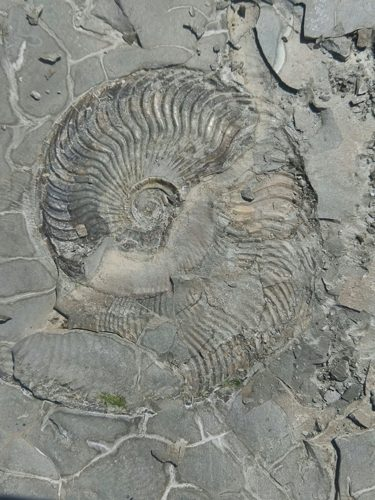
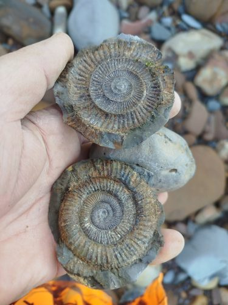
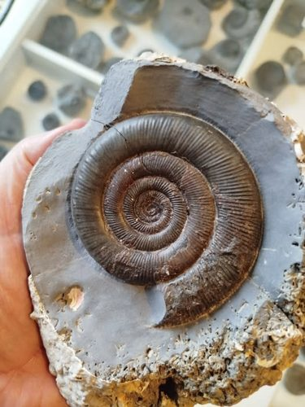
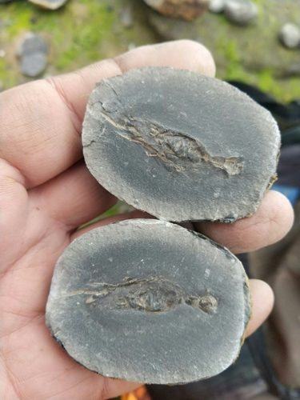
Le système repose ainsi sur une coopération entre collecteurs, gestionnaires de sites, musées et scientifiques. Les amateurs présents régulièrement sur le terrain peuvent intervenir rapidement après les tempêtes, repérer des spécimens importants, les documenter et les transmettre à ceux qui pourront les étudier. Ils y sont même encouragés ! [25]
Un exemple récent illustre l’intérêt de cette collaboration. En 2001, près de Golden Cap, sur la Jurassic Coast, un collectionneur de fossiles, Chris Moore, a découvert un squelette presque complet de reptile marin. Étudié par des spécialistes, il a été reconnu en 2025 comme une nouvelle espèce, Xiphodracon goldencapensis [26]. Ce squelette est le seul exemple connu à ce jour de cette espèce et a permis de combler une lacune importante dans l’histoire évolutive des ichtyosaures. Chris Moore est un collecteur professionnel : au Royaume-Uni, amateurs comme professionnels sont intégrés à une même chaîne, dont le premier maillon est le regard de celui qui arpente la plage.
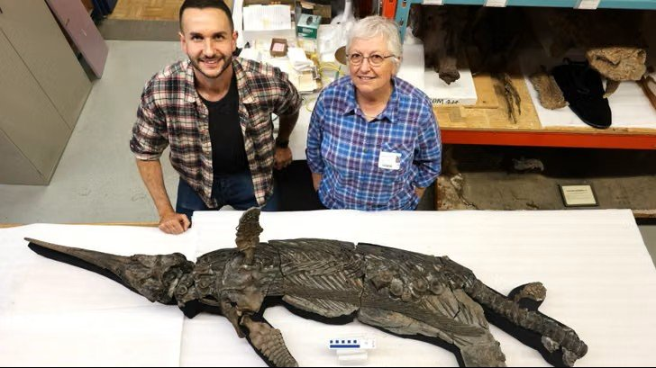
Chercher des fossiles peut aussi commencer très jeune
Toujours sur la côte du Dorset, un autre cas récent montre la portée pédagogique de cette approche. En 2024, Edward Unwin, âgé de dix ans, a découvert sur le littoral une série de vertèbres d’ichtyosaure encore articulées, datées d’environ 190 millions d’années [27]. La découverte a été confiée à l’équipe de The Etches Collection, à Kimmeridge.
En France, dans un secteur soumis à une interdiction comparable, un enfant qui découvrirait un tel fossile aurait l’obligation de le laisser sur place avec la frustration de le savoir condamné. Le fossile disparaîtrait avec l’érosion et les marées. Mais disparaîtrait alors non seulement une découverte scientifique possible mais aussi une expérience susceptible de marquer durablement un enfant. Personne ne peut savoir si une découverte fera naître une vocation scientifique. Mais une passion commence souvent par une première rencontre. Et une interdiction aura pour effet de stopper la recherche de fossiles et de freiner la fréquentation de ces plages.
Le contraste est saisissant. En Angleterre, dans ce contexte, l’enfant qui cherche un fossile n’est pas considéré comme un futur pilleur qu’il faudrait empêcher de toucher au patrimoine : il est encouragé à observer, chercher, apprendre et partager ses découvertes. Il ne fait aucun doute que ce moment, et la fierté d’avoir découvert une telle pièce, resteront gravés à jamais dans sa mémoire.
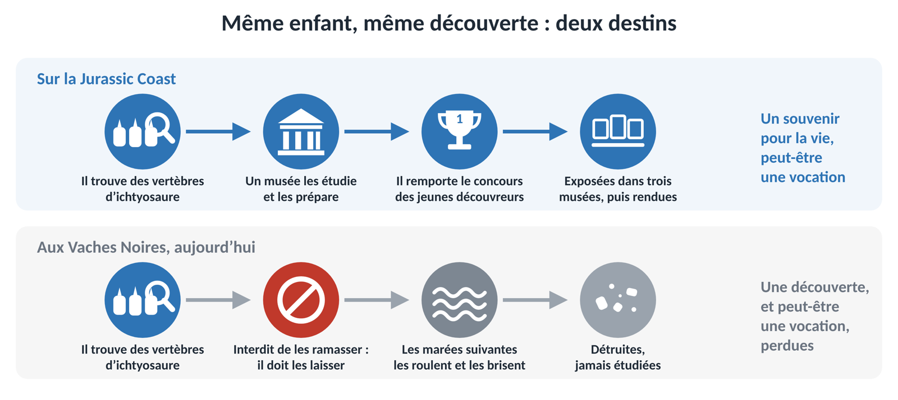
Preuve de cet encouragement : The Etches Collection organise la « Children’s Fossil Competition », permettant aux enfants de concourir avec leur plus belle découverte et avec la possibilité de voir leur découverte présentée au musée [28]. Cet enfant de 10 ans, Edward Unwin, a d’ailleurs remporté la toute première édition de ce concours en novembre 2024. Sa découverte a donc gagné le droit d’être exposée pendant un an, d’abord dans ce musée, The Etches Collection Museum, puis au Charmouth Heritage Coast Centre, et enfin au Lyme Regis Museum afin que tout le monde puisse en profiter, avant de lui être restituée.
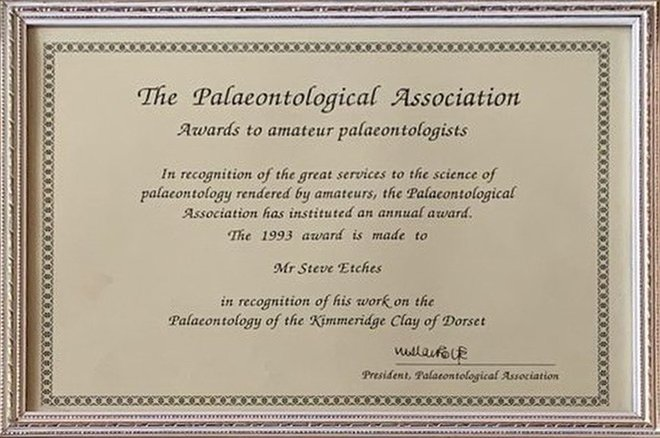
The Etches Collection porte le nom de son fondateur, et son parcours résume à lui seul la philosophie britannique. Steve Etches est plombier de métier et n’a jamais fait d’études universitaires. Il a trouvé son premier fossile, un oursin, à l’âge de cinq ans, et a consacré plus de cinquante ans à prospecter les plages et les falaises de Kimmeridge [29]. Il y a réuni plus de 2 800 fossiles du Jurassique supérieur, dont des pièces inédites pour la science, comme les premiers œufs d’ammonites connus ou le premier crâne de ptérosaure découvert dans l’argile de Kimmeridge. Ses pairs l’ont reconnu très tôt : en 1993, puis en 2005, la Palaeontological Association, principale société savante britannique de paléontologie, lui a décerné le prix qu’elle réserve aux paléontologues amateurs, aujourd’hui appelé Mary Anning Award [30]. En 2014, la reine Elizabeth II l’a fait membre de l’ordre de l’Empire britannique (MBE), la première distinction de ce type décernée pour services rendus à la paléontologie ; en 2017, l’Université de Southampton lui a remis un doctorat honoris causa [31]. Sa collection, longtemps conservée dans son garage, est exposée depuis 2016 dans un musée ouvert au public à Kimmeridge, financé notamment par 2,7 millions de livres du fonds du patrimoine de la loterie nationale britannique [32]. En 2023, c’est à partir d’un museau repéré sur la plage par un autre collectionneur, Phil Jacobs, que l’équipe réunie autour de Steve Etches a extrait de la falaise le crâne presque complet, long de près de deux mètres, d’un pliosaure géant, présenté par David Attenborough dans un documentaire de la BBC [33]. Dans une réserve française où le ramassage est interdit, Steve Etches serait resté plombier, et ses fossiles auraient été broyés par la mer.
Le Natural History Museum de Londres et d’autres organismes britanniques présentent eux aussi la recherche de fossiles sur les côtes comme une activité légitime là où elle est autorisée, tout en rappelant les règles locales, l’interdiction de creuser les falaises et l’importance de signaler les découvertes intéressantes.
Ce modèle ne doit pas forcément être transposé mécaniquement en France : les statuts des terrains, les réglementations et les sites diffèrent. Mais son principe mérite d’être retenu. Protéger un patrimoine ne signifie pas empêcher toute intervention humaine. Dans certains contextes, permettre à quelqu’un de récupérer un fossile naturellement dégagé et voué à une destruction certaine constitue au contraire une mesure de sauvegarde.
La question n’est donc plus seulement de savoir comment empêcher les amateurs de prélever. Elle devient : comment identifier ceux avec lesquels il est possible de travailler ? Un amateur formé, membre d’un club géologique, capable de documenter une découverte et acceptant de signaler les spécimens présentant un intérêt scientifique ne doit pas être vu comme un pilleur. Il peut devenir un auxiliaire de la conservation du patrimoine.
8. L’interdiction en question : les arguments examinés
Le décret du 2 septembre 2026 interdit, dans l’ensemble de la réserve, de prélever, y compris de ramasser, des fossiles, roches, sables, minéraux et concrétions [1][34]. L’interdiction s’applique donc aussi à l’estran, où l’érosion dépose chaque jour des fossiles voués à la destruction. Plusieurs arguments ont été avancés pour la justifier. Ils méritent d’être examinés un par un.
Précisons d’abord notre position. Nombreux sont ceux qui se réjouissent, à juste raison, de la création de réserves pour préserver des espaces naturels, à l’heure où l’urbanisation et l’intérêt économique prennent si souvent le pas sur l’intérêt environnemental, historique ou paléontologique. Nous soutenons la création de cette réserve. Seul est en cause le ramassage, sur l’estran, des fossiles que la mer a déjà libérés.
Rappelons que l’accès aux falaises est interdit depuis le plan de prévention des risques approuvé en 1993 et le décret de classement du site en février 1995. L’interdiction de prélever des fossiles dans les falaises est donc déjà en place et non contestée.
« Une interdiction générale est plus simple à contrôler »
Un argument parfois avancé est d’ordre pratique : l’interdiction du ramassage sur l’estran supprimerait la distinction entre prélever un fossile dans la falaise et récupérer un fossile que l’érosion a déjà libéré. Une interdiction générale faciliterait donc le travail de la police, puisqu’il est difficile de déterminer si un fossile a été ramassé sur l’estran ou extrait de la falaise.
Si l’accès aux falaises est interdit, la protection du site doit pouvoir reposer sur l’interdiction d’y pénétrer et sur la constatation des infractions qui y sont commises. La difficulté de distinguer une infraction d’une activité légitime ne devrait pas conduire à supprimer l’activité légitime.
La facilité du contrôle ne devrait pas devenir le critère déterminant d’une politique de conservation du patrimoine.
Une activité difficile à contrôler n’est d’ailleurs pas nécessairement interdite. La pêche à pied, pratiquée sur le même estran et qui prélève du vivant, reste autorisée dans la réserve [35] : elle est réglementée et contrôlée, comme la pêche en général, et cela ne pose pas de problème. Enfin, sur 37 km de côte répartis en six secteurs, l’interdiction du ramassage sera elle-même très difficile à faire respecter.
« Les amateurs aggravent l’érosion »
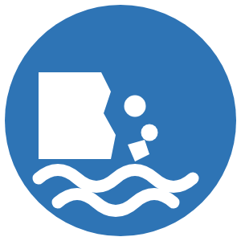
La falaise continuera de reculer, les tempêtes continueront de déplacer des centaines de milliers de tonnes de matériaux et les marées continueront de disperser les fossiles. La seule différence est le devenir du fossile : sera-t-il récupéré avant sa destruction, ou disparaîtra-t-il avec les galets et la mer ?Un argument revient régulièrement pour justifier l’interdiction : les amateurs contribueraient eux-mêmes à l’érosion du site en prélevant des blocs qui protègeraient de la houle, en « grattant » l’estran ou en faisant baisser le niveau du platier, ce qui exposerait davantage la falaise à la houle [36].
Tout d’abord, les amateurs interviennent après l’érosion, pas avant. Ils ne creusent pas la falaise et n’en détachent pas les blocs. Sur l’estran, ils récupèrent à la main les fossiles que l’érosion a déjà libérés et mis au jour.
Un impact dérisoire face à la puissance de l'érosion
Ensuite l'ordre de grandeur permet de comprendre immédiatement pourquoi cet argument ne tient pas. Le dossier d'étude de la réserve naturelle [37] estime les volumes de matériaux mobilisés par l'érosion à environ 450 000 tonnes de sédiments par an. Ce chiffre n'est pas une estimation avancée par les seuls collecteurs : il a également été repris dans une question posée à l'Assemblée nationale à propos de la protection des Vaches Noires [38]. Cela représente plus de 1 200 tonnes chaque jour, soit l'équivalent d'environ 68 camions de 18 tonnes tous les jours !
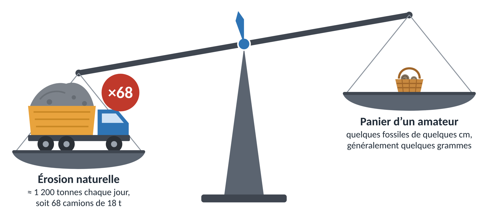
Et ces fossiles n'auraient de toute façon pas constitué une protection de la falaise lors de la marée suivante : ils ont déjà été libérés par l'érosion et sont de taille insignifiante. La mer continuera donc son travail, que quelqu'un ramasse ou non le fossile qu'elle vient de mettre à jour.
Face à cela, quelques petits fossiles ramassés à la main par des amateurs ne constituent pas un facteur mesurable de modification du platier. Même multipliée par un grand nombre de collecteurs, cette activité reste sans commune mesure avec les masses de sédiments déplacées quotidiennement par la mer.
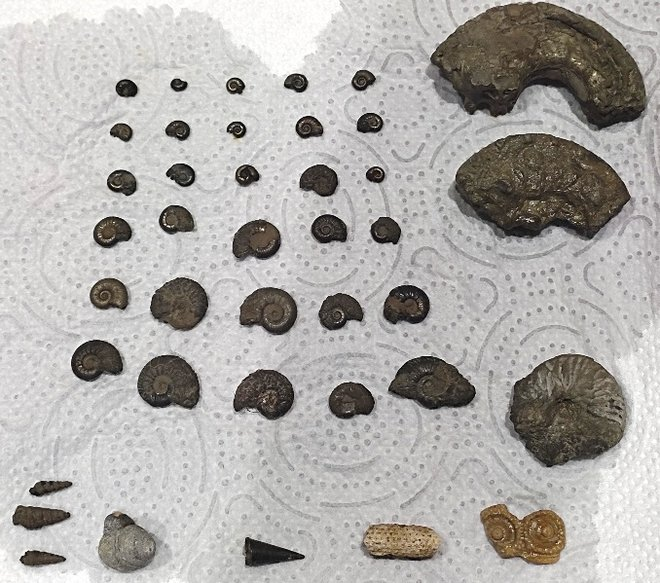
Les amateurs ne retirent pas des blocs qui constituent le platier et qui participent à la protection du littoral. Les découvertes habituelles sont de petits fossiles ou des fragments de quelques centimètres. Ces éléments sont déjà détachés, déplacés par les marées et soumis à l'abrasion. Leur retrait par un promeneur ne fait pas baisser le niveau général du platier et ne modifie pas la protection de la falaise contre la houle. Personne ne vient avec des engins pour extraire des centaines de kg ni même pour repartir avec des kg de pierres ! On parle ici de quelques fossiles de quelques cm tout au plus, représentant généralement moins d’un kg.
Cet argument ne correspond pas à la réalité de la collecte pratiquée sur les Vaches Noires.
« Les amateurs sont des pilleurs »
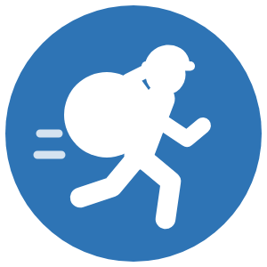
Cet argument revient souvent dans le débat : les amateurs sont présentés comme des « pilleurs », en assimilant le ramassage de fossiles sur l’estran à l’extraction dans les falaises ou à un commerce prétendument lucratif. Cette présentation efface une distinction essentielle : un fossile dégagé naturellement par l’érosion et ramassé sur l’estran n’est pas un fossile extrait de la falaise.Et l’aspect « lucratif » de cette activité n’est ni chiffré ni argumenté. Il entretient surtout un amalgame entre le commerce professionnel de fossiles et de minéraux, dont une grande partie provient de l’étranger, et la revente ou l’échange de petites pièces sur les brocantes ou sur internet, pour quelques euros qui ne couvrent généralement même pas les frais d’essence et d’hébergement.
Il ne faut pas confondre non plus ces petites pièces avec les fossiles d’exception vendus aux enchères. Fin octobre 2026, chez Sotheby’s à New York, le squelette de « Jodi », un Nanotyrannus, petit cousin du T. rex, a été adjugé 47,3 millions de dollars, soit plus de 40 millions d’euros, plusieurs fois son estimation [39]. L’année précédente, la même maison avait vendu lors d’une même vacation un jeune Ceratosaurus pour 30,5 millions de dollars et la plus grande météorite martienne connue pour 5,3 millions [40]. Ce marché de prestige, qui porte sur des squelettes rarissimes de grands vertébrés et attire de très grandes fortunes, relève de logiques de collection et de placement proches de celles des œuvres d’art ou des météorites. Il n’a rien de commun avec une ammonite pyritisée de quelques centimètres, échangée entre passionnés ou vendue quelques euros. Invoquer ces records pour justifier l’interdiction du ramassage sur l’estran revient à confondre deux mondes.
Aux Vaches Noires, les découvertes les plus courantes sont de petits fossiles, souvent abondants : petites ammonites pyritisées, Gryphaea, Lopha et autres fragments d’invertébrés. Leur valeur marchande est très faible. Assimiler la collecte ordinaire sur l’estran à une activité commerciale lucrative ne correspond pas à ce que l’on observe sur le terrain ni à l’état d’esprit de la très grande majorité des amateurs. Éric Buffetaut parle à ce sujet d’une « légende urbaine sur les pilleurs de fossiles » : les fossiles des Vaches Noires n’ont pas de valeur marchande, et les collectionneurs respectent la nature et la science [9].
Surtout, il faut distinguer des pratiques qui n’ont rien de commun : extraire un fossile de la falaise, exploiter un gisement à des fins commerciales, faire circuler des pièces sur un marché international et ramasser à la main un fossile que l’érosion vient de libérer ne sont pas une seule et même activité.
Le dossier du CNPN emploie pourtant le terme de « pillage » pour justifier l’interdiction générale et met en avant la dispersion de pièces sur le marché français et international [41]. Il ne démontre pas, dans les passages consacrés à cette justification, que le simple ramassage des fossiles déjà libérés sur l’estran constitue lui-même ce phénomène. Le rapprochement entre ces réalités doit donc être contesté.
Le CNPN reconnaît par ailleurs qu’une collecte scientifique ou pédagogique peut permettre le « sauvetage » d’éléments du géopatrimoine [41]. Mais un littoral en érosion ne libère pas ses fossiles selon un calendrier scientifique. Une opération ponctuelle ne sera pas présente à chaque marée, après chaque tempête, sur chaque portion de côte. Comment peut-on raisonnablement penser que laisser des fossiles à l’action destructrice de la mer va contribuer à la protection du patrimoine géologique ou à l’étude, un jour, par un scientifique qui pourrait le voir in situ ? Le jour où une opération scientifique passera par là, le fossile en question aura disparu depuis des semaines, voire des mois, détruit ou emporté par la mer.
Il est déjà dégagé de sa couche d’origine et déplacé par la marée : le découvrir in situ n’apporterait à un scientifique aucune information supplémentaire. Qu’il soit rare ou non, sa disparition est définitive : aucun scientifique ne pourra plus l’étudier et aucun musée ne pourra plus le conserver.
C’est précisément là que les amateurs jouent tout leur rôle. Ils assurent une présence régulière sur le terrain, ils observent, ramassent, photographient, identifient, échangent avec des spécialistes et donnent des spécimens aux musées. Un amateur n’est pas un pilleur. Il est souvent le premier maillon entre le fossile libéré par l’érosion et la connaissance scientifique.
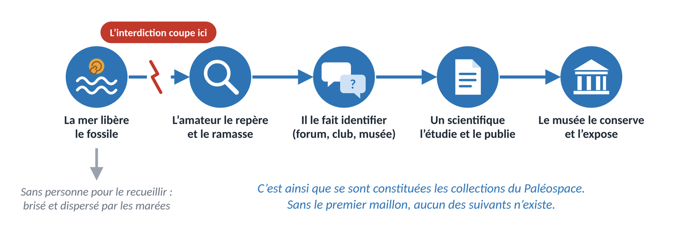
Le meilleur démenti vient du site lui-même. À Villers-sur-Mer, au pied des Vaches Noires, l’Association paléontologique de Villers-sur-Mer (APVSM) a été créée en 1979 par des chercheurs amateurs désireux de partager leur passion des fossiles. Elle publie des bulletins, des chroniques annuelles, les actes de ses colloques et, depuis 1995, une revue annuelle, L’Écho des Falaises [42]. Elle organise des exposés mensuels, des conférences publiques chaque été et des séances mensuelles de détermination des fossiles trouvés au pied de la falaise ; elle a créé un prix « Jeunes chercheurs » doté de 5 000 € et travaille avec l’équipe du Paléospace et avec des scientifiques qui lui apportent leur soutien [43]. Tous les deux ans, son colloque « Paléontologie et archéologie de Normandie » réunit chercheurs et passionnés : la quatrième édition, en novembre 2025, a rassemblé dix-huit présentations de paléontologie et sept communications d’archéologie [44]. En 2022, l’association a même co-organisé, avec le Paléospace, le Muséum national d’Histoire naturelle et la Société géologique de France, le colloque national « Collections de Sciences de la Terre », qui a accueilli à Villers-sur-Mer des chercheurs du Muséum, du CNRS et d’une douzaine d’universités [45]. Une association d’amateurs qui publie, transmet et accueille la communauté scientifique : le portrait du pilleur ne résiste pas à ce constat.
« Seuls quelques collectionneurs s’opposent à l’interdiction »
Cette image du collectionneur-pilleur se retrouve dans la communication publique autour du projet. Un article de France 3 Normandie consacré à la nouvelle réserve donne la parole à Marie Thomas, directrice de Réserves Naturelles de France [46]. Les amateurs y sont accusés de piller les sites pour faire commerce de leurs trouvailles, et les collectivités sont présentées comme favorables au projet : « 32 communes consultées et seulement deux avis défavorables, dont la ville de Villers-sur-Mer ». Or l’adhésion au projet de réserve ne signifie pas l’adhésion à l’interdiction du ramassage des fossiles.
La question n’est pas de savoir si les communes sont « pour » ou « contre » la réserve, mais si elles acceptent une disposition précise : l’interdiction du ramassage des fossiles sur l’estran. Or, dès 2023, les 51 communes des communautés de communes « Cœur de Côte Fleurie » et « Normandie Cabourg Pays d’Auge » s’étaient prononcées solidairement contre cette mesure, avec de nombreux citoyens, associations et universités [38].
L’enquête publique de 2022 l’avait déjà montré : sur les 907 observations déposées dans le registre dématérialisé, 697 approuvaient la création de la réserve tout en s’opposant à l’interdiction du ramassage des fossiles sur l’estran. Les communes de Houlgate, Bénerville-sur-Mer et Villerville, ainsi que la communauté de communes Normandie Cabourg Pays d’Auge, avaient conditionné leur avis favorable à l’autorisation du ramassage [47]. Le CNPN lui-même a relevé que les réserves exprimées lors de l’enquête publique portaient essentiellement sur cette interdiction [41]. Cet avis largement exprimé n’a pas été suivi.
L’opposition ne vient pas seulement des amateurs. Elle est partagée par des paléontologues, dont Éric Buffetaut, par le Paléospace, Musée de France, et par les élus locaux. Le maire de Villers-sur-Mer, Roméo Frot, a annoncé un recours contre l’interdiction [48][9]. Il précise qu’il ne remet pas en cause la zone protégée, mais le principe d’interdiction du ramassage : selon lui, il faut « ne pas interdire, mais bien encadrer dès le départ » [9]. D’autres collectivités se sont associées à sa démarche. Le 25 septembre 2026, à Deauville, le conseil de la communauté de communes Cœur Côte Fleurie a adopté à l’unanimité une motion de soutien à Villers-sur-Mer. Son président, Philippe Augier, maire de Deauville, a rappelé que toutes les communes littorales de l’intercommunalité sont concernées par la réserve. Présentée par Roméo Frot, la motion ne vise pas la réserve elle-même, mais l’interdiction du ramassage, alors que celui-ci participe à la connaissance scientifique, à la transmission du patrimoine géologique et à l’attractivité touristique du littoral. La communauté de communes « Cœur de Côte Fleurie » participera aux honoraires d’avocat du recours, dans la limite d’un montant estimé entre 10 000 et 20 000 € [49].
Éric Buffetaut souligne aussi que le site est connu en France et à l’étranger pour la richesse de ses fossiles, et que l’interdiction aura un impact sur l’économie locale [9].
« Le ramassage sur le domaine public maritime est de toute façon interdit »
C’est l’argument juridique principal de l’administration. Selon la DREAL, l’estran appartient au domaine public maritime, propriété de l’État ; y ramasser des fossiles nécessiterait l’autorisation du propriétaire et serait donc interdit, même sans réserve naturelle [34]. Le commissaire enquêteur en a conclu que la réserve n’apportait pas de restriction supplémentaire [50].
Cet argument se retourne pourtant facilement. Si le ramassage relève d’une autorisation du propriétaire, alors le propriétaire, c’est-à-dire l’État, peut l’accorder. La question n’est donc pas juridique mais politique : il s’agit de savoir si l’État veut autoriser la sauvegarde des fossiles que la mer va détruire. Par ailleurs, le ramassage a été pratiqué ouvertement pendant plus de deux siècles, et ses fruits sont entrés par milliers dans les collections d’un Musée de France. Enfin, si la réserve n’ajoutait réellement rien, on comprendrait mal que cette disposition ait concentré l’essentiel des oppositions.
« Un décret ne peut pas prévoir de tolérance »
La DREAL affirme : « Juridiquement une tolérance ne peut pas être inscrite à un décret : il y a autorisation ou interdiction » [34]. Le CNPN, de son côté, présentait l’interdiction comme la « seule voie de protection effective contre le pillage et la destruction des sites » et demandait un décret qui ne prévoie « aucune exception » [41].
Le décret adopté prévoit pourtant lui-même, dans son article 7, que des opérations à visée scientifique ou pédagogique peuvent être autorisées [1][35][9]. Le principe d’une exception existe donc bel et bien : seule son étendue est en débat. D’autres réserves géologiques françaises le montrent aussi. Dans la réserve géologique du Luberon, des dérogations préfectorales sont accordées à des fins scientifiques ou pédagogiques [51]. Mais ces réserves sont situées à l’intérieur des terres : les fossiles y restent protégés dans la roche. Sur un littoral en érosion, le contexte est totalement différent : ils sont détruits en quelques marées, et la nécessité d’une exception y est donc bien plus pressante.
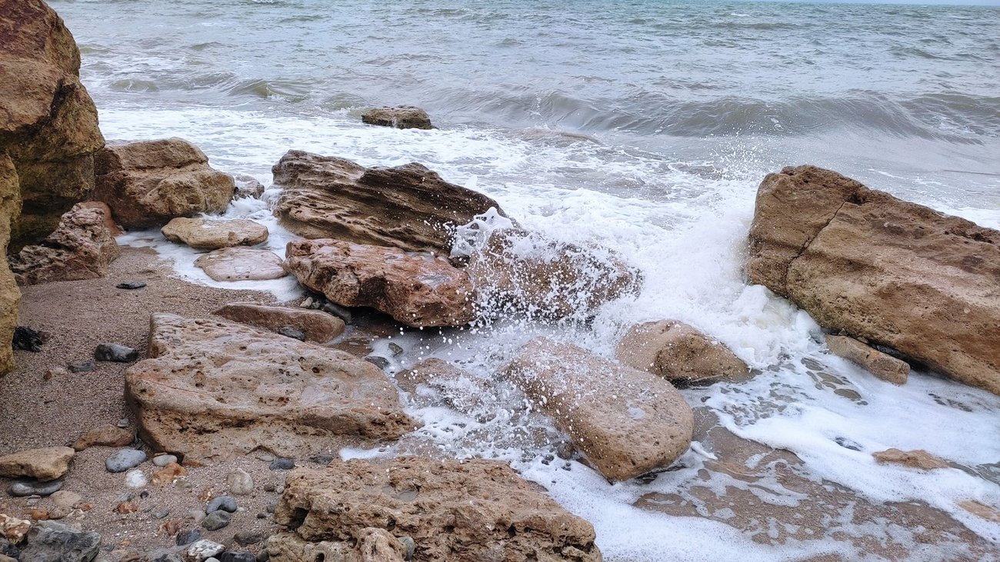
Telle qu’elle est prévue, cette exception reste cependant très insuffisante. Pour Éric Buffetaut, elle « ne répond pas à l’urgence de la situation » : vu la nature des roches, si la récolte n’est permise que dans des conditions exceptionnelles, des tonnes de sédiments seront emportées chaque année et des milliers de fossiles détruits [9]. Dès 2023, Nathalie Bardet prévenait que de telles dérogations ne seraient « qu’ une usine à gaz administrative », inadaptée à des découvertes qui se font de façon aléatoire [10].
Une dérogation reconnaissant l’intérêt du ramassage avait d’ailleurs été envisagée. Selon le maire de Villers-sur-Mer, l’ancienne secrétaire d’État chargée de la biodiversité, Sarah El Haïry, y était favorable, avant que le projet ne se perde dans les remaniements gouvernementaux successifs [48].
Pour les fossiles libérés par l’érosion, l’alternative posée par la DREAL prend un sens très concret : autoriser leur récupération, c’est permettre leur sauvegarde ; l’interdire, c’est les vouer à la destruction.
« Les instances scientifiques ont demandé l’interdiction »
Dans sa réponse à la question écrite de 2023, le ministère souligne que les experts du Conseil scientifique régional du patrimoine naturel (CSRPN) et du CNPN ont demandé unanimement l’interdiction de toute forme de prélèvement [38]. Mais d’autres scientifiques, tout aussi qualifiés, défendent la position inverse : des paléontologues comme Éric Buffetaut, directeur de recherche émérite au CNRS, et Nathalie Bardet, directrice de recherche au CNRS (Muséum national d’Histoire naturelle) et présidente de l’Association paléontologique française, qui a qualifié l’interdiction d’« insensée » en clôture du congrès international réuni par l’APF à Villers-sur-Mer en juin 2023 [10] ; le Paléospace, Musée de France, dont les collections et les publications reposent sur les dons d’amateurs ; les auteurs des études citées plus haut [11][13]. Dès 2023, des paléontologues regrettaient publiquement de ne pas avoir été consultés [52]. En février 2024, une tribune internationale réunissant près de 80 paléontologues, universitaires, directeurs et conservateurs de musées du monde entier, dont Laurent Picot a centralisé les signatures, qualifiait le projet de « véritable contre-sens scientifique et pédagogique » : si les fossiles ne sont pas rapidement collectés, la diversité de la faune et de la flore du Jurassique est emportée par la marée et définitivement perdue [53][54].
Au lendemain de la publication du décret, Éric Buffetaut a de nouveau pris position publiquement. Pour lui, interdire le ramassage par les collectionneurs amateurs « est un risque de perte majeur pour la science ». Parmi les fossiles recueillis, beaucoup ont peu d’intérêt, mais certains sont rares, et mieux vaut les ramasser que les laisser détruire. Surtout, même si la réserve employait des paléontologues, ceux-ci n’égaleraient pas la « force de frappe » des amateurs. Sa conclusion est sans ambiguïté : il faut laisser les amateurs aller sur l’estran quand ils le veulent [9]. Il n’existe donc pas de consensus scientifique en faveur de l’interdiction du ramassage sur l’estran.
L’effet pervers : la clandestinité
Au-delà de ces arguments, l’interdiction produit un effet que ses promoteurs n’ont pas mesuré. Elle ne fera pas disparaître le ramassage : sur des kilomètres d’estran, il restera largement impossible à empêcher. Elle fera disparaître les dons et la traçabilité. Un amateur qui découvre demain une pièce exceptionnelle ne pourra plus la confier au Paléospace sans reconnaître une infraction. Les découvertes ne seront plus déclarées, plus documentées, plus étudiées. Les demandes d’identification ont déjà cessé sur les forums par crainte de représailles.
Le décret risque ainsi d’alimenter le circuit parallèle qu’il prétend combattre, et de couper le lien de confiance entre amateurs, musées et chercheurs qui a fait la richesse des collections normandes. Ce risque avait déjà été clairement identifié il y a près de trente ans.
Une question déjà débattue
Alors que les projets de réglementation du patrimoine géologique des années 1990 tendaient à restreindre l’activité des collectionneurs, des voix scientifiques se sont élevées pour inverser la responsabilité des destructions. Comme le souligne le géologue Maurice Mattauer (2000), ce sont principalement les grands travaux industriels et l’inertie de l’État qui menacent la préservation des fossiles, tandis que les amateurs passionnés effectuent un travail indispensable de sauvegarde sur le terrain [55].
À la suite de la loi « Barnier » de 1995 (Loi n° 95-101), les milieux scientifiques s'étaient émus du manque de dispositions spécifiques pour la paléontologie. Pour y répondre, le sénateur Louis Souvet avait déposé une proposition de loi en octobre 1997 [56].
À l'époque, le Sénat venait d'ouvrir un espace pionnier de démocratie participative sur son site internet naissant via l'adresse e-mail dédiée geologie@senat.fr. Une consultation publique en ligne a été menée auprès des professionnels, des universitaires et des associations de collecteurs amateurs. Les contributions ont été clôturées et synthétisées par les services du Sénat le 30 avril 1998 [57].
Pourquoi cette proposition de loi n'a-t-elle jamais abouti ?
La proposition de loi a finalement été abandonnée et son examen a été stoppé. Les conclusions de la synthèse du 30 avril 1998 ont mis en évidence qu'une législation trop répressive découragerait les amateurs de bonne foi, privant la science de découvertes majeures fortuites : « Il apparaîtrait qu'une réglementation trop restrictive puisse avoir un effet contraire à l'objectif poursuivi en risquant de favoriser les fouilles sauvages dont les résultats ne pourraient être exploités par les scientifiques. Plutôt qu'une restriction de l'accès aux sites, il semblerait qu'il faille s'attacher à contrôler les conditions dans lesquelles se déroulent les fouilles ». Ceci a poussé le législateur à ne pas inscrire le texte à l'ordre du jour de la séance publique. N'ayant jamais été votée, aucun décret d'application ne pouvait réglementairement voir le jour.
9. Protéger autrement : trois pistes pour une collecte responsable
Interdire le ramassage sur l’estran ne protège pas les fossiles qui y apparaissent, même avec des actions de collecte pédagogiques ou scientifiques, forcément ponctuelles. Dans le même temps, les amateurs constituent une force d’observation considérable, qui a déjà largement enrichi les collections publiques et la recherche.
Il ne s’agit donc pas de choisir entre protection et collecte. Il s’agit de protéger autrement. Plusieurs pistes, non exclusives, pourraient permettre d’organiser une collecte responsable tout en maintenant une protection stricte des secteurs qui doivent l’être.
Sanctuariser la falaise, libérer l’estran
L’interdiction absolue de toute intervention sur la falaise en place doit être maintenue. Elle répond à la nécessité de préserver l’intégrité géologique du site et aux impératifs de sécurité.
En revanche, les fossiles naturellement détachés et présents sur l’estran devraient pouvoir être ramassés manuellement. Prélever dans la falaise modifie le site, récupérer un fossile déjà libéré par l’érosion ne l’altère pas. Le ramassage sur l’estran devrait donc être considéré comme une récupération des éléments que l’érosion vient précisément de libérer et que la mer détruira, sans effet sur l’érosion, en gardant en tête la dimension et la quantité de fossiles ramassés, tout à fait négligeables, même en présence d’un grand nombre d’amateurs.
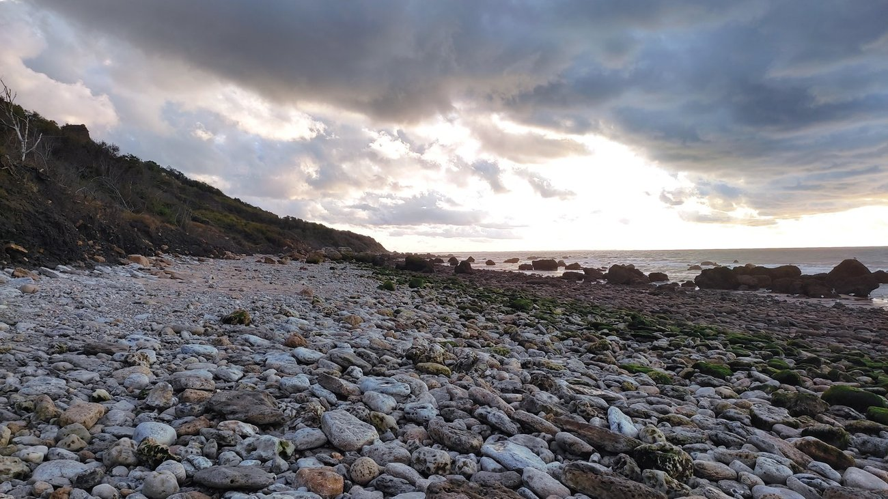
Créer un « Permis Géologique » ou « Passeport Géologique »
Une seconde piste consisterait à responsabiliser les pratiquants plutôt qu’à interdire indistinctement leur activité. Sur le modèle, dans son principe, des dispositifs existant pour la chasse ou la pêche, un « Permis Géologique » pourrait être créé.
Gratuit ou à coût symbolique, il pourrait être délivré après une courte formation ou un test en ligne portant sur les règles de collecte, la distinction entre falaise et estran, les impératifs de sécurité, les méthodes respectueuses et le signalement des découvertes exceptionnelles.
Le détenteur serait ainsi responsabilisé et identifiable. En contrepartie de la possibilité de pratiquer légalement, il accepterait des règles précises et des sanctions en cas d’infraction, pouvant aller jusqu’au retrait du permis.
Donner un rôle aux clubs et sociétés savantes
Une troisième piste consisterait à s’appuyer sur les structures qui connaissent déjà le terrain, sont sensibilisées à la protection des sites, et disposent d’une longue expérience de la collecte et de la transmission des découvertes et d’un réseau de contacts avec des scientifiques et autres associations et musées.
Les clubs géologiques et sociétés savantes pourraient bénéficier d’un agrément ou d’une autorisation spécifique de prospection et de collecte, selon des conditions définies avec les gestionnaires des sites, les musées et les scientifiques.
Ces structures pourraient s’engager au travers d’une charte éthique précisant notamment l’interdiction de toute intervention sur les falaises lorsque celle-ci est prohibée, le respect des zones particulièrement sensibles, la documentation des découvertes, la conservation des informations relatives au contexte de découverte et le signalement des spécimens présentant un intérêt scientifique particulier.
Les clubs constitueraient ainsi un intermédiaire de confiance entre les amateurs, les scientifiques et les pouvoirs publics. De telles structures existent déjà au pied même de la réserve : l’Association paléontologique de Villers-sur-Mer, évoquée plus haut, travaille depuis plus de quarante ans aux côtés du Paléospace et de scientifiques [43].
Ces trois pistes ne s’opposent pas. Elles pourraient au contraire se compléter : un estran accessible pour la récupération des fossiles naturellement dégagés ; un permis pour former et responsabiliser les pratiquants ; des clubs agréés pour organiser et encadrer une véritable collecte de sauvegarde.
L’objectif ne serait pas d’autoriser n’importe quelle pratique, n’importe où et dans n’importe quelles conditions. Il serait de créer un cadre dans lequel la protection du site, la sécurité, la pratique amateur et la recherche scientifique puissent fonctionner ensemble.
Ces pistes peuvent être engagées sans attendre une modification du décret. Celui-ci permet déjà des prélèvements à des fins scientifiques ou pédagogiques : des autorisations durables accordées au Paléospace et à des clubs agréés, un volet « collecte de sauvegarde » dans le futur plan de gestion de la réserve et la présence de paléontologues amateurs au sein de son comité consultatif en constitueraient une première traduction concrète.
Protéger d’abord ce qui compte vraiment
L’actualité donne la mesure du paradoxe. Le 18 novembre 2026, l’unique squelette connu de Dubreuillosaurus valesdunensis, un dinosaure carnivore d’environ cinq mètres vieux de quelque 167 millions d’années, doit être vendu aux enchères à l’hôtel Drouot, avec une estimation de 250 000 à 350 000 € [58]. C’est un holotype, le spécimen de référence de son espèce pour la science du monde entier. Et s’il existe, c’est grâce à un amateur. En septembre 1994, André Dubreuil, alors maire de Conteville, dans le Calvados, cherchait des ammonites et des bélemnites parmi les blocs de calcaire d’une ancienne galerie qu’il avait fait rouvrir sur son terrain ; passionné de fossiles, il avait l’habitude d’offrir ses trouvailles en double aux enfants pour qu’ils en parlent à l’école. Son regard s’arrête sur une pierre marquée de courbes orangées : des dents. Le professeur Michel Rioult, de l’université de Caen, y reconnaît celles d’un dinosaure carnivore. Avec son fils, André Dubreuil poursuit les recherches dans les déblais, puis fait appel en 1998 au Muséum national d’Histoire naturelle. Le professeur Philippe Taquet vient fouiller le site avec une équipe d’étudiants, guidée sur le terrain par le découvreur lui-même, qui continue entre les campagnes à recueillir, inventorier et filmer chaque pièce. Ces fossiles permettront à l’un de ces étudiants, Ronan Allain, de décrire en 2002 un genre et une espèce nouveaux, qui portent le nom de leur découvreur. Vingt ans après sa découverte, André Dubreuil choisit de confier le squelette au Paléospace de Villers-sur-Mer pour le rendre accessible au public [59]. Sans son regard, ce fossile exceptionnel ne serait jamais parvenu jusqu’aux scientifiques, jusqu’au musée ni jusqu’au public. Ses héritiers le mettent aujourd’hui en vente, et le Centre de recherche en paléontologie de Paris réclame qu’il « demeure dans une collection publique accessible aux chercheurs » [58]. Le contraste est saisissant : l’État s’emploie à interdire le ramassage de fossiles que la mer va détruire, mais ne s’est pas donné les moyens de conserver un patrimoine qu’un amateur avait déjà sauvé. Le droit offre pourtant déjà des outils. Le catalogue de la vente le présente comme un bien culturel : pour quitter la France, il lui faudra un certificat d’exportation du ministère de la Culture, qui peut le refuser [60]. Et l’État dispose d’un droit de préemption sur les biens présentant un intérêt paléontologique vendus aux enchères [61]. Encore faut-il s’en servir : seule une intervention de l’État ou d’un musée, au prix fixé par les enchères, peut garantir que ce fossile reste accessible aux chercheurs dans une collection publique [58]. Les fossiles d’exception relèvent ainsi déjà du droit du patrimoine culturel ; c’est ce cadre qu’il faut mobiliser, et non l’interdiction de ramasser les petits fossiles que la mer détruit.
Le droit présente en revanche une lacune au moment de la découverte. Lorsqu’un vestige archéologique est mis au jour pendant des travaux, sa découverte doit être déclarée et les travaux peuvent être suspendus le temps d’une fouille. Rien de tel pour un fossile : sa découverte n’impose pas l’arrêt du chantier [62]. Sa sauvegarde repose donc entièrement sur la vigilance de ceux qui le remarquent. En 2017, ce sont ainsi les gérants d’une entreprise de sciage de pierre de Caen, à Falaise, qui ont reconnu des restes d’os de dinosaure dans leurs blocs et alerté aussitôt le Paléospace [62]. Le patrimoine paléontologique ne survit que grâce à ces regards attentifs : ceux des amateurs, des carriers, des promeneurs, que la réglementation devrait encourager plutôt que décourager.
La réponse ne saurait être d’interdire la possession des fossiles. C’est parce qu’il en restait propriétaire qu’André Dubreuil a pu, en toute confiance, signaler sa découverte, la faire étudier et la confier à un musée. Une interdiction de possession produirait le même effet pervers que l’interdiction du ramassage : des découvertes tues, jamais déclarées, jamais étudiées. La protection du patrimoine paléontologique gagnerait à se concentrer sur ce qui compte vraiment : donner aux collections publiques les moyens d’acquérir ou d’accueillir les spécimens d’importance scientifique, en s’appuyant sur ceux qui les découvrent, plutôt que d’abandonner tous les autres à la mer.
10. Conclusion — Sauver ce qui peut encore l’être
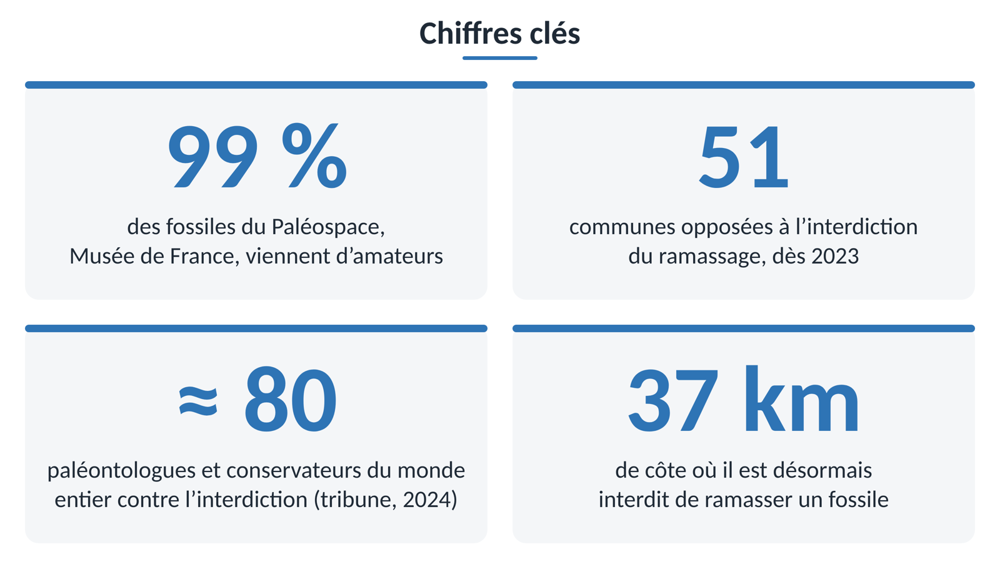
Chaque marée écrit une nouvelle page de l'histoire géologique de la Normandie. Certaines révèlent des fossiles qui n'avaient plus vu la lumière depuis des millions d'années. La question n'est pas seulement de savoir s'il faut les ramasser ou les laisser sur place. Elle est de savoir comment transmettre ce patrimoine aux générations futures, sans opposer protection, recherche et passion, mais en les faisant travailler ensemble.
Les fossiles des côtes du Calvados appartiennent à une histoire bien plus vaste que celle de ceux qui les cherchent. Ils racontent plusieurs dizaines de millions d’années d’évolution de la vie et constituent une partie du patrimoine scientifique et culturel du pays.
Mais ce patrimoine possède une particularité essentielle : une partie de ses archives est constamment détruite par le phénomène même qui permet de les découvrir. Aux Vaches Noires comme sur d’autres portions du littoral, l’érosion libère des fossiles qui sont ensuite livrés aux marées, aux galets et à l’abrasion et sont voués à disparaître s’ils ne sont pas récupérés très rapidement.
Le choix de la protection ne devrait donc pas opposer conservation et collecte. Il devrait s’appuyer sur la réalité du terrain : interdire l’extraction de la falaise, empêcher les dégradations du site, mais permettre de sauver ceux qui gisent déjà sur l’estran.
Interdire le ramassage ne ralentit pas l’érosion. Pas d’un millimètre. Cela change seulement le destin des fossiles que l’érosion vient de libérer : rejoindre une collection, une étude ou un musée, ou disparaître à la prochaine marée.
La mer ne prévient pas : les opérations ponctuelles de collecte ne peuvent pas remplacer la présence continue de ceux qui parcourent le terrain.
Le problème posé par l’interdiction va donc bien au-delà du loisir de quelques amateurs. Elle prive les collections publiques et les scientifiques de leur principale source de spécimens : 99 % des fossiles du Paléospace proviennent d’amateurs. Elle risque de faire basculer dans la clandestinité des découvertes qui, jusqu’ici, étaient données aux musées. Elle ferme aussi, au moment même où l’enquête PISA 2025 vient de confirmer le décrochage des élèves français en sciences, l’une des initiations les plus simples et les plus gratuites à la culture scientifique, celle où naissent bien des vocations [2]. Et elle condamne à la disparition les fossiles que personne ne sera plus autorisé à récupérer. C’est, selon les mots d’Éric Buffetaut, un risque de perte majeur pour la science [9].
Le fossile qui apparaît aujourd’hui sur l’estran aura disparu demain. Entre sa sauvegarde et sa destruction, il n’y a qu’une décision. Nous demandons que cette décision soit reconsidérée, et que ceux qui sauvent ces fossiles depuis plus de deux siècles puissent continuer à le faire, dans un cadre clair, au service du patrimoine commun.
11. Références
Afficher les 62 référencesMasquer les références
- Légifrance - Décret n° 2026-848 du 2 septembre 2026 portant création de la réserve naturelle nationale des falaises jurassiques du Calvados, publié au JORF du 9 septembre 2026. -https://www.legifrance.gouv.fr/jorf/id/JORFTEXT000054811481
- Public Sénat - « Classement PISA : le niveau des élèves français n’a jamais été aussi bas, mais reste dans la moyenne de l’OCDE », 8 septembre 2026. - https://www.publicsenat.fr/actualites/education/classement-pisa-le-niveau-des-eleves-francais-na-jamais-ete-aussi-bas-mais-reste-dans-la-moyenne-de-locde
- DEPP / IEA - TIMSS 2023 : compétences en mathématiques et en sciences des élèves de CM1 et de quatrième (notes d’information, dont « En connaissances environnementales, les résultats des élèves de France sous la moyenne européenne »). - https://catalogue.depp.education.fr/index.php/catalog/191
- Café pédagogique - « PISA 2025 : les élèves français aiment les sciences plus que leurs résultats ne le montrent », 8 septembre 2026. - https://www.cafepedagogique.net/2026/09/08/pisa-2025-les-eleves-francais-aiment-les-sciences-plus-que-leurs-resultats-ne-le-montrent/
- Quinn J. G., Whiteside D. I., Cooper S. L. A., Bow J., Baffou A., Howells C., Matheau-Raven E. R. et Benton M. J. - « Redescriptions of Birgeria acuminata (Agassiz, 1835) and Saurichthys sp. (Actinopterygii) fossils from the British Rhaetian, and redundancy of the genus Severnichthys Storrs, 1994 », Journal of Vertebrate Paleontology, e2708075, publié en ligne le 24 septembre 2026. - https://doi.org/10.1080/02724634.2026.2708075
- Actu.fr - « Villers-sur-Mer : un groupe de collecteurs amateurs découvre un poisson fossile rarissime ». — https://actu.fr/normandie/villers-sur-mer_14754/villers-sur-mer-un-groupe-de-collecteurs-amateurs-decouvre-un-poisson-fossile-rarissime_60733652.html
- Laurent Picot, paléontologue au Paléospace - Communication directe au projet : 26 000 fossiles inventoriés, au moins 10 000 encore à inventorier, 99 % provenant d’amateurs ; collections sous le label « Musée de France ».
- Paléospace - Les collections - informations sur les collections « Musée de France ». -https://www.paleospace-villers.fr/les-collections/
- Ouest-France (S. Humbert et S. Arnaud) - « Pour ce paléontologue normand, interdire le ramassage de fossiles est “un risque de perte majeur pour la science” », 25 septembre 2026. - https://www.ouest-france.fr/sciences/archeologie/pour-ce-paleontologue-normand-interdire-le-ramassage-de-fossiles-est-un-risque-de-perte-majeur-pour-la-science-d6c63b68-b5cf-11f1-b63d-de500e5af22f
- Ouest-France (K. Verger) - « “Interdiction insensée” : dans le Calvados, les paléontologues tiennent au ramassage des fossiles », 9 juin 2023. - https://www.ouest-france.fr/normandie/villers-sur-mer-14640/interdiction-insensee-a-villers-les-paleontologues-tiennent-au-ramassage-des-fossiles-0c616804-06ad-11ee-8841-e89b1d29ab23
- Beaufils S. et al. - « Composition and paleoecology of the mid-Jurassic bony fish assemblage of the Vaches Noires cliffs (Normandy, France) », PLOS One, mai 2026. - https://journals.plos.org/plosone/article?id=10.1371%2Fjournal.pone.0344519
- Tendance Ouest - « Villers-sur-Mer. Des fossiles de la falaise des Vaches Noires révèlent de nouvelles espèces de poissons de la période du Jurassique », juin 2026. - https://www.tendanceouest.com/actualite-439894-villers-sur-mer-des-fossiles-de-la-falaise-des-vaches-noires-revelent-de-nouvelles-especes-de-poissons-de-la-periode-du-jurassique
- « The Cretaceous Dinosaur Record from Normandy (NW France): A Review », Fossils, 4(1), février 2026. - https://doi.org/10.3390/fossils4010005
- Académie de Normandie, site SVT - « Un nouveau dinosaure normand découvert par un professeur d’un lycée de Dieppe » (Nicolas Cottard, professeur de sciences physiques au lycée Pablo-Neruda ; blocs mis au jour en janvier 2021 et avril 2023 dans le même éboulement ; Hoyez, Girard et Cottard, Le Cénomanien du littoral normand, 2020). - https://svt.ac-normandie.fr/spip.php?article727
- France 3 Normandie - « “C’est vraiment étonnant, presque incroyable !” Une nouvelle espèce de dinosaure carnivore, unique au monde, découverte en Normandie », septembre 2024. - https://france3-regions.franceinfo.fr/normandie/seine-maritime/havre/c-est-vraiment-etonnant-presque-incroyable-une-nouvelle-espece-de-dinosaure-carnivore-unique-au-monde-decouverte-en-normandie-3033626.html
- Buffetaut E., Tong H., Girard J., Hoyez B., Párraga J. - « Caletodraco cottardi: A New Furileusaurian Abelisaurid (Dinosauria: Theropoda) from the Cenomanian Chalk of Normandy (North-Western France) », Fossil Studies, 2(3), 177-195, août 2024 (blocs tombés de la falaise, endommagés avant d’être recueillis ; don au muséum du Havre). - https://www.mdpi.com/2813-6284/2/3/9
- Boessenecker R. W. - « Amateur paleontology… », Palaeontologia Electronica, 2022. - https://palaeo-electronica.org/content/2022/3517-amateur-paleontology
- CNN (repris par KTVZ) - « 70-million-year-old dinosaur fossil discovered in France is an almost complete titanosaur skeleton », 7 mars 2024. - https://ktvz.com/news/national-world/cnn-world/2024/03/07/70-million-year-old-dinosaur-fossil-discovered-in-france-is-an-almost-complete-titanosaur-skeleton/
- Futura Sciences (M. Gillard) - « Un squelette quasi complet de titanosaure découvert par un jeune paléontologue amateur dans le sud de la France ! », 22 février 2024. - https://www.futura-sciences.com/planete/actualites/terre-squelette-quasi-complet-titanosaure-decouvert-jeune-paleontologue-amateur-sud-france-111568/
- Communauté de communes Sud-Hérault - « Portrait de passionné : Damien Boschetto ». - https://www.cc-sud-herault.fr/actualite/portrait-de-passionne-damien-boschetto/
- Le Parisien - « À Montouliers, dans l’Hérault, les paléontologues déterrent des dinosaures entiers : “C’est très physique” », 8 octobre 2024. - https://www.leparisien.fr/herault-34/a-montouliers-dans-lherault-les-paleontologues-deterrent-des-dinosaures-entiers-cest-tres-physique-08-10-2024-UCH3C56IV5AKJITGPGAEYO7OAM.php
- Joint Nature Conservation Committee (JNCC) - Conserving Our Fossil Heritage – a JNCC Policy Statement (1997). Politique sur la collecte responsable des fossiles. - https://data.jncc.gov.uk/data/ab60570e-9e70-4216-924d-90c3390b0715/Fossilcollectingpolicy.pdf
- Charmouth Heritage Coast Centre - Fossil Collecting Code - code de conduite pour la collecte de fossiles sur la côte du Dorset. - https://charmouth.org/chcc/the-fossil-collecting-code/
- Reedman, C. et al. - Fossil Collecting Codes of Conduct on the Jurassic Coast World Heritage Site, Geoconservation Research, 7(2), 2024. - https://oiccpress.com/gcr/article/view/8251
- Natural History Museum (Londres) - How to find fossils on the beach - présentation de la recherche de fossiles sur les côtes et rappel des règles locales. - https://www.nhm.ac.uk/discover/how-to-find-fossils-on-the-beach.html
- Huffingtonpost - Ce fossile de « dragon épée du Dorset », découvert dans le sud de l’Angleterre, est unique. - https://www.huffingtonpost.fr/science/article/ce-fossile-de-dragon-epee-du-dorset-decouvert-dans-le-sud-de-l-angleterre-est-unique_255850.html
- The Etches Collection - Publication relative à la découverte d’Edward Unwin, âgé de dix ans. - https://www.facebook.com/theetchescollectionkimmeridge/posts/this-is-a-series-of-ichthyosaur-vertebrae-found-by-edward-unwin-aged-10edward-di/1702766255184024/
- The Etches Collection - « Children’s Fossil Competition ». - https://www.theetchescollection.org/fossilcomp
- The Etches Collection - « Steve’s Story : One Man’s Passion » (parcours de Steve Etches, plombier de métier, fondateur du musée). - https://www.theetchescollection.org/steves-story
- Palaeontological Association - « Medal and award winners list » (Mary Anning Award, appelé avant 1999 « Award to Amateur Palaeontologists » : Steve Etches, lauréat en 1993 et en 2005). - https://www.palass.org/awards-grants/awards/medal-and-award-winners-list
- Université de Southampton - « Honorary doctorate for Dorset fossil collector Steve Etches », août 2017 (MBE 2014 pour services rendus à la paléontologie, œufs d’ammonites, crâne de ptérosaure). - https://www.southampton.ac.uk/news/2017/08/steve-etches-doctorate.page
- National Lottery Heritage Fund - « Museum of Jurassic Marine Life opens in Kimmeridge », 21 octobre 2016. - https://heritagefund.org.uk/news/museum-jurassic-marine-life-opens-kimmeridge
- NPR - « Scientists have found the mostly intact skull of a giant, deadly sea reptile », 11 décembre 2023. - https://www.kunc.org/npr-news/2023-12-11/scientists-have-found-the-mostly-intact-skull-of-a-giant-deadly-sea-reptile
- Projet de création d’une réserve naturelle nationale sur les falaises jurassiques du Calvados - https://www.normandie.developpement-durable.gouv.fr/projet-de-creation-d-une-reserve-naturelle-a4158.html
- La Clé publique - « Falaises jurassiques du Calvados : 1 877 hectares protégés », 9 septembre 2026. - https://laclepublique.fr/calvados/articles/2026/2026-09-09-reserve-falaises-jurassiques/
- Géoforum - Discussions consacrées au libre ramassage des fossiles aux Vaches Noires et aux arguments relatifs à l’érosion. Source de discussion à distinguer des sources institutionnelles. - https://www.geoforum.fr/topic/51066-association-de-d%C3%A9fense-de-la-pal%C3%A9ontologie-normande-adpn/#comments
- DREAL Normandie - Dossier / étude sur la réserve naturelle des falaises jurassiques du Calvados - données relatives à l’érosion, notamment le recul de l’escarpement et les volumes de sédiments. - https://www.normandie.developpement-durable.gouv.fr/IMG/pdf/2.1-rapportd_etude.pdf
- Assemblée nationale - Question n° 6558 sur la protection des Vaches Noires et l’érosion du site. - https://questions.assemblee-nationale.fr/q16/16-6558QE.htm
- 20 Minutes - Article du 28 octobre 2026 sur la vente chez Sotheby’s, à New York, du squelette de Nanotyrannus « Jodi », adjugé 47,3 millions de dollars. - https://www.20minutes.fr/high-tech/sciences/4258363-20261028-squelette-tres-rare-mini-rex-adjuge-47-3-millions-dollars-new-york
- National Geographic - « Who wants to buy a piece of Mars? », juillet 2025 (vente « Geek Week » de Sotheby’s : météorite martienne NWA 16788 et jeune Ceratosaurus). - https://www.nationalgeographic.com/science/article/sotheby-geek-week-auction-mars-meteorite-ceratosaurus-dinosaur
- Conseil national de la protection de la nature (CNPN) - Délibération n° 2023-06 du 18 avril 2023 - avis final relatif au projet de création de la RNN des falaises jurassiques du Calvados. - https://www.avis-biodiversite.developpement-durable.gouv.fr/IMG/pdf/2023-06_avis_rnn_falaises_jurassiques_calvados_cnpn_du_18_04_2023-vf.pdf
- APVSM - Publications : bulletins, actes des colloques, L’Écho des Falaises, chroniques annuelles, excursions. - https://www.fossiles-villers.com/publications/
- Association paléontologique de Villers-sur-Mer (APVSM) - « Qui sommes-nous ? » : association loi de 1901 créée en 1979, activités, colloques, prix Jeunes chercheurs, partenariat avec le Paléospace. - https://www.fossiles-villers.com/
- APVSM - Colloques « Paléontologie et Archéologie de Normandie » (4e édition, 15 et 16 novembre 2025, en partenariat avec le Musée Paléospace et la revue Fossil Studies). - https://www.fossiles-villers.com/colloques/
- Muséum national d’Histoire naturelle, CR2P - Colloque « Collections de Sciences de la Terre », Villers-sur-Mer, 19-23 septembre 2022 : livret des résumés (comité d’organisation : Paléospace, MNHN, Société géologique de France, APVSM). - https://paleo.mnhn.fr/sites/cr2p/files/atoms/files/2022/09/livretresumesvillers.pdf
- France 3 Normandie - « Nouvelle réserve naturelle, interdiction de ramasser les fossiles : pourquoi la protection des falaises jurassiques du Calvados fait des vagues ». - https://france3-regions.franceinfo.fr/normandie/calvados/nouvelle-reserve-naturelle-interdiction-de-ramasser-les-fossiles-pourquoi-la-protection-des-falaises-jurassiques-du-calvados-fait-des-vagues-3399580.html
- Pierre Guinot-Delery, commissaire enquêteur - « Création de la réserve naturelle nationale des falaises jurassiques du Calvados », enquête publique n° E22000037/14 (24 août - 16 septembre 2022), 1re partie : rapport d’enquête et annexes, p. 12-16 (697 des 907 observations favorables à la réserve mais opposées à l’interdiction du ramassage sur l’estran ; avis des communes). - https://www.normandie.developpement-durable.gouv.fr/IMG/pdf/rnn_-_rapport.pdf
- ICI Normandie - « Le ramassage des fossiles menacé sur les falaises des Vaches Noires à Villers-sur-Mer », 9 août 2026. - https://www.ici.fr/normandie/calvados-14/villers-sur-mer/le-ramassage-des-fossiles-menace-sur-les-falaises-des-vaches-noires-a-villers-sur-mer-6673740
- Ouest-France (S. Humbert) - « Interdiction du ramassage des fossiles dans le Calvados : cette commune va déposer un recours devant le Conseil d’État », 26 septembre 2026. - https://www.ouest-france.fr/sciences/archeologie/interdiction-du-ramassage-des-fossiles-dans-le-calvados-cette-commune-va-deposer-un-recours-devant-le-conseil-detat-37042898-b989-11f1-bf2b-20ac402d7e60
- Réserves Naturelles de France - « Soutien au projet de création de la RNN Falaises jurassiques du Calvados ». - https://www.portail.reserves-naturelles.org/articles/113157-soutien-au-projet-de-creation-de-la-rnn-falaises-jurassiques-du-calvados
- Parc naturel régional du Luberon - Réserve naturelle géologique du Luberon, périmètre et réglementation (décret n° 87-827 du 16 septembre 1987). - https://www.parcduluberon.fr/non-classifiee/perimetre-et-reglementation/
- franceinfo - « "Aucun paléontologue n'a été consulté" : l'interdiction du ramassage des fossiles sur les plages normandes inquiète les scientifiques », mai 2023. - https://www.franceinfo.fr/replay-radio/le-choix-franceinfo/aucun-paleontologue-n-a-ete-consulte-l-interdiction-du-ramassage-des-fossiles-sur-les-plages-normandes-inquiete-les-scientifiques_5822642.html
- Mairie de Villers-sur-Mer - « Fossiles | Une tribune pour sauver leur libre ramassage aux Vaches Noires », 20 février 2024. - https://www.villers-sur-mer.fr/fossiles-une-tribune-pour-sauver-leur-libre-ramassage-aux-vaches-noires/
- Géoforum - « Fossiles : une tribune pour sauver leur libre ramassage aux Vaches Noires » (texte de la tribune et prises de position de paléontologues), 25 février 2024. - https://www.geoforum.fr/topic/54548-fossiles-une-tribune-pour-sauver-leur-libre-ramassage-aux-vaches-noires-calvados-normandie/
- Maurice Mattauer, géologue (2000). Pour une autre approche de la protection du patrimoine géologique. Annales de la Société Géologique du Nord, 7(4) - https://www.persee.fr/doc/asgn_0767-7367_2000_num_7_4_6449
- Sénat - Proposition de loi n° 23 (1997-1998) visant à la protection du patrimoine géologique. Déposée par M. Louis Souvet et plusieurs de ses collègues le 9 octobre 1997. Session ordinaire de 1997-1998. - https://www.senat.fr/leg/ppl97-023.html
- Sénat. (1998, 30 avril). Synthèse de la consultation publique par messagerie électronique sur la proposition de loi visant à la protection du patrimoine géologique [Note de synthèse en ligne, supprimée]. Services du Sénat.
- La Clé publique - « Le dinosaure de Conteville aux enchères : le musée ne le possédait pas », 26 octobre 2026. - https://laclepublique.fr/calvados/articles/2026/2026-10-26-dinosaure-conteville-encheres/
- André Dubreuil - récit de la découverte du Dubreuillosaurus, L’Écho des Falaises n° 18 (2014), repris dans le livret de l’excursion 2015 de l’Association paléontologique de Villers-sur-Mer. - https://www.fossiles-villers.com/wp-content/uploads/2023/03/excursion-2015-1433135707.pdf
- Millon - Catalogue de la vente Histoire naturelle, Drouot, 18 novembre 2026, lot 203 : « Dinosaure Dubreuillosaurus valesdunensis » (62 ossements dont le crâne, complet à 70 %, et moulage du crâne ; « Le Dubreuillosaurus valesdunensis est un bien culturel » ; certificat d’exportation du ministère de la Culture requis pour sortir de France, sans recours en cas de refus). - https://www.millon.com/catalogue/vente4432-histoire-naturelle/lot203-dinosaure-dubreuillosaurus-valesdunensis
- Fournol & Associés (A. Fournol, avocat) - « Dinosaure aux enchères : préemption et trésor national », 29 octobre 2026 (préemption de l’État, art. L. 123-1 et R. 123-2, 10°, du Code du patrimoine : « collections et biens présentant un intérêt […] paléontologique »). - https://fournol-associes.com/droit-du-patrimoine-culturel/dinosaure-encheres-preemption-tresor-national/
- Ouest-France - « Un dinosaure découvert au sud de Caen en vedette », 4 avril 2017. - https://www.ouest-france.fr/normandie/villers-sur-mer-14640/un-dinosaure-decouvert-au-sud-de-caen-en-vedette-4903966
Annexe 1 — Ce que l’estran a livré
Ces fossiles ont été trouvés au fil des années sur l’estran des Vaches Noires par un amateur passionné, avant l’entrée en vigueur de l’interdiction. Le plaisir de les nettoyer, préparer, mettre en valeur, identifier s’ajoute à celui de les rechercher. Chacun a été ramassé alors que la mer l’avait déjà libéré de la falaise : sans personne pour le recueillir, il aurait été roulé, usé, puis détruit par les marées. Désormais, des pièces comme celles-ci sont condamnées à disparaître sans que personne ne les ait jamais vues.
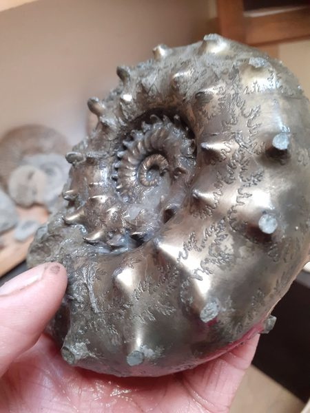
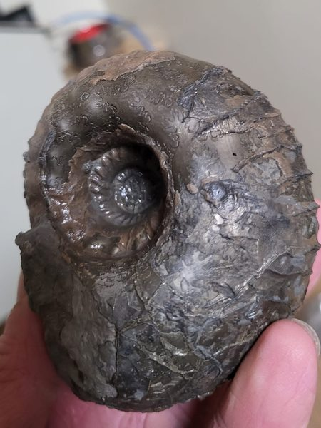
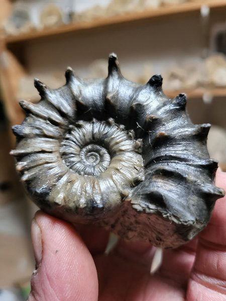
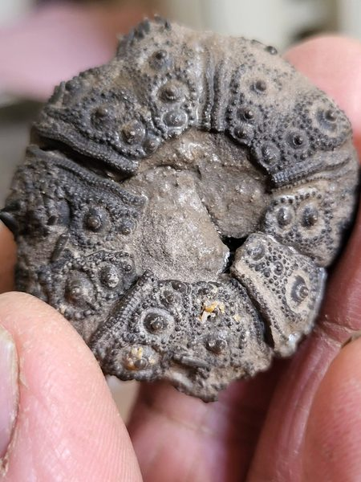
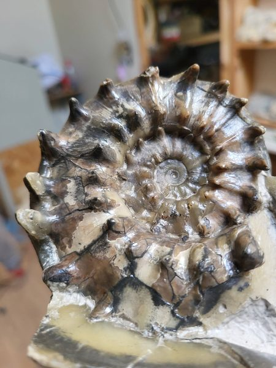
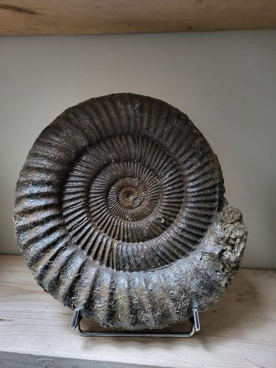
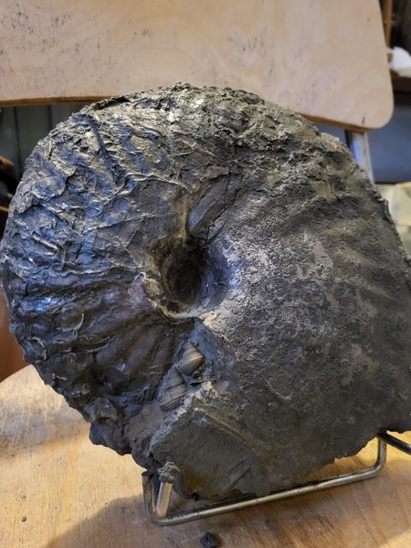
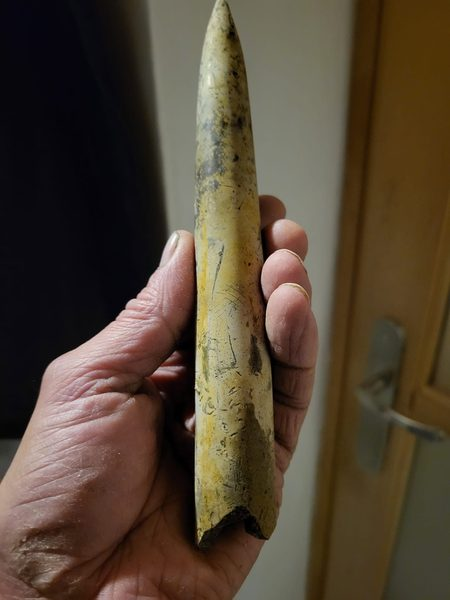
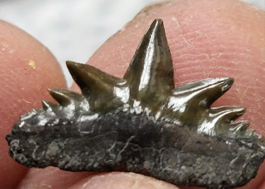
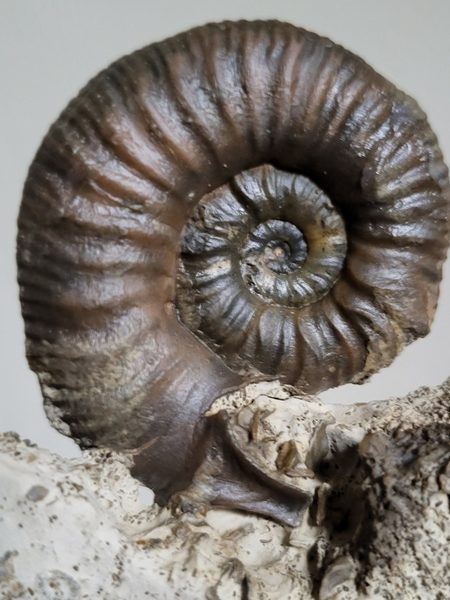
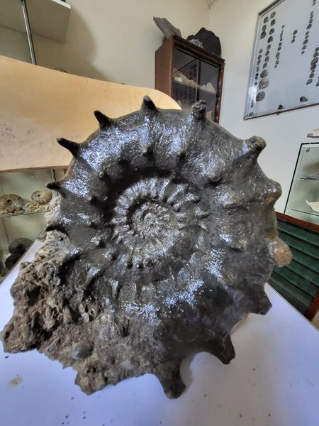
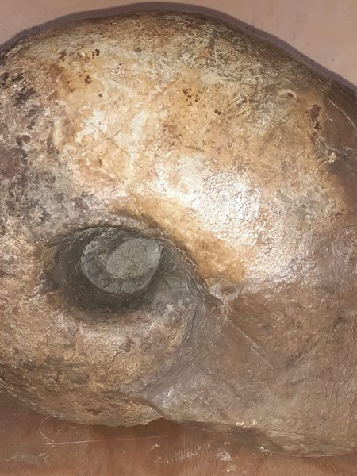
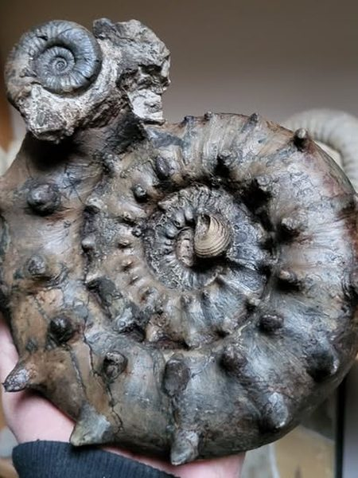
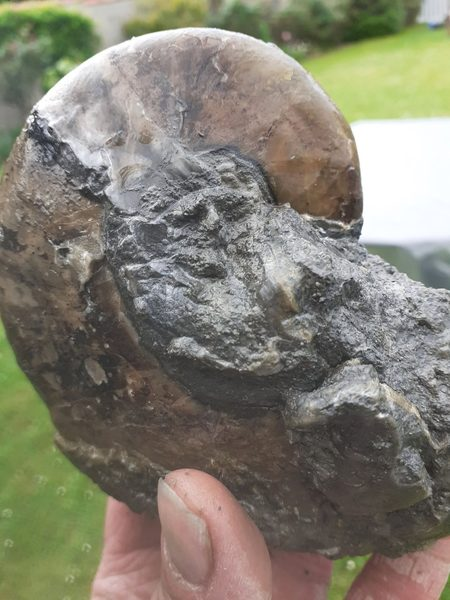
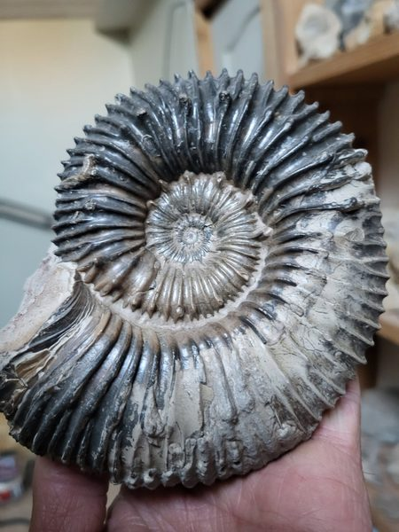
Annexe 2 — Une fable pour le dire autrement
Jonathan Houelle, amateur passionné, a voulu exprimer à sa manière ce que cette page s’efforce de démontrer. Nous le remercions chaleureusement de nous avoir autorisés à reproduire sa fable, publiée en septembre 2026.
Le Collectionneur, la Vague et le Magistrat
Sur les rives de la Manche, où la mer bat les flancs
Des falaises de craie et des rochers changeants,
Un Curieux cheminait, l’œil rivé sur la grève.
Il cherchait les débris d’un monde d’autrefois,
Un coquillage de pierre, un secret de nos rois,
Qu’un prodige du temps à nos yeux soulève.
Une ammonite enfin, par le flot détachée,
Devant lui sur le sable était là, couchée.
« Quel trésor ! » dit l’Amateur en tendant la main,
« Si je la laisse ici, elle meurt demain ! »
Mais un Garde parut, l’œil sévère et hautain,
Portant un parchemin scellé d’un grand dessein.
« Halte-là, promeneur ! Laissez cette relique !
Un décret est tombé, le site est protégé.
Nul ne peut emporter ce qu’un fleuve figé
A légué pour toujours à la terre publique.
La loi veut qu’on regarde et qu’on ne touche point. »
L’Amateur, interdit, lui répondit alors :
« Mais voyez donc la mer qui s’avance au lointain !
Si je n’emporte pas ces précieux trésors,
La marée, ce soir même, en brisera les corps.
Vaut-il mieux qu’une étude enrichisse l’histoire,
Ou que l’océan sourd engloutisse la gloire ? »
« La règle est la règle », répliqua le censeur,
« La nature gardera ce qui vient de son sein. »
Le soir même vint l’eau, terrible balayeur.
La vague, sans décret, sans loi et sans dessein,
S’abattit sur la roche et le fossile ancien.
Elle le broya net, n’en laissant plus rien,
Transformant le chef-d’œuvre en un grain de poussière.
Moralité
À vouloir tout garder sous un excès de lois,
On perd ce que l’on croit protéger du naufrage.
Une règle absolue, appliquée sans choix,
Livre bien plus souvent la science au pillage
Du temps qui détruit tout, bien mieux que le chercheur.
Jonathan Houelle